B4 · Fable 5.2 · attempt HPzs5bW
Batch fb2 · job fb2_B_EXP23000279_rep1_230309_claude-fable-5-2 · trial B_EXP23000279_rep1_230309__HPzs5bW. Long tool outputs are cut at 6,000 characters.
0.30
57.3
$14.87
717
126
cd /task; cat inputs/plan.md; echo ----; cat inputs/plate_layout.csv; echo ----; ls -la inputs/raw outputs; head -c 1500 inputs/start.flow
# EXP23000279 | Caspase Assay in WT and PGRNKO iPSC Derived Neurons Notebook plan for the run acquired on 2023-03-09. This is the scientist's text as written, up to the start of this run's results. ## DAY 2023-03-09 ### Background: Loss of function of PGRN has been shown to negatively impact neural cell health reflected by increased cell death and caspase activity. Caspases are important mediators of the cell death pathway (apoptosis). Caspases are a group of proteases that result in cleavage of protein substrates subsequently leading to cell disassembly. For the PGRN RNAswap program we will want to measure caspase activity in iPSC derived neurons before and after adding the PGRN RNAswap constructs to ensure that PGRN protein replacement is rescuing the health of neurons. Before testing if AAV-PGRN constructs help restore neural health I will test and optimize the assay on the neurons with no AAV. ### Objective: For first round of experiments will be optimizing the assay. The goal will be to determine if a difference in caspase activity is present in PGRNKOs compared to WT PGP1 neurons. Camptothsesin (topoisomerase inhibitor) will be added. ### Materials: - Camptothecin - CellEvent Caspase 3/7 reagent - DMSO - Zombie NIR ### Procedure: - Differentiate WT and PGRNKO iPSC into neurons - Once cells are sufficiently neuronal can run caspase assay. - Add camptothecin Follow plate maps below. | Dose | for 1 well | |---|---| | 10uM | 20uL of 250uM stock into 500uL media | | 5uM | 10uL of 250uM stock into 500uL media | | 2uM | 4uL of 250uM stock into 500uL media | | 1uM | 2uL of 250uM stock into 500uL media | | DMSO (no treatment controls) | 10uL into 500uL media | - Incubate with camptothecin for 4.5hrs WT plate map (as written): ``` WT DMSO | WT 5uM camptothecin | WT caspase stain only WT no treatment | WT 10uM camptothecin | WT caspase stain only WT 1uM camptothecin | WT no stain | WT L/D only WT 2uM camptothecin | WT no stain | WT L/D only ``` KO plate map (as written): ``` KO DMSO | KO 5uM camptothecin | KO caspase only KO no treatment | KO 10uM camptothecin | KO caspase only KO 1uM camptothecin | KO no stain | KO L/D only KO 2uM camptothecin | KO no stain | KO L/D only ``` 5. Run flow Flow plate map (as written; the remaining rows of the table are empty): ``` WT no stain | WT no stain | WT caspase only | WT caspase only | WT L/D only | WT L/D only | WT 10uM camptothecin | WT 5uM camptothecin | WT 2uM camptothecin | WT 1uM camptothecin | WT DMSO | WT no treatment KO no stain | KO no stain | KO caspase only | KO caspase only | KO L/D only | KO L/D only | KO 10uM camptothecin | KO 5uM camptothecin | KO 2uM camptothecin | KO 1uM camptothecin | KO DMSO | KO no treatment ``` 3. Run CellEvent flow assay - Aspirate media and wash with PBS - Add 150uL accutase incubate for 5-10min - Add 75uL FBS and collect into 96w round bottom plate - spin down 200xg for 5min - Add 200uL Zombie NIR at 1:500 (4mL PBS+ 8uL Zombie) Incubate for 10min - Spin down and remove Zombie stain - Add 200uL of Cell Event Caspase 3/7 Detection reagent (1:1000) in flow staining buffer. Incubate for 30min at 37C (4mL +4uL reagent) - Analyze the samples without fixing. ---- file,well,sample,genotype,treatment Caspase_WT_KO_optimization_caspase_Group_A2.fcs,A2,WT no stain,WT,no stain Caspase_WT_KO_optimization_caspase_Group_A4.fcs,A4,WT caspase only,WT,caspase only Caspase_WT_KO_optimization_caspase_Group_A6.fcs,A6,WT L/D only,WT,L/D only Caspase_WT_KO_optimization_caspase_Group_A7.fcs,A7,WT 10uM camptothecin,WT,10uM camptothecin Caspase_WT_KO_optimization_caspase_Group_A8.fcs,A8,WT 5uM camptothecin,WT,5uM camptothecin Caspase_WT_KO_optimization_caspase_Group_A9.fcs,A9,WT 2uM camptothecin,WT,2uM camptothecin Caspase_WT_KO_optimization_caspase_Group_A10.fcs,A10,WT 1uM camptothecin,WT,1uM camptothecin Caspase_WT_KO_optimization_caspase_Group_A11.fcs,A11,WT DMSO,WT,DMSO Caspase_WT_KO_optimization_caspase_Group_A12.fcs,A12,WT no treatment,WT,no treatment Caspase_WT_KO_optimization_caspase_Group_B2.fcs,B2,KO no stain,KO,no stain Caspase_WT_KO_optimization_caspase_Group_B4.fcs,B4,KO caspase only,KO,caspase only Caspase_WT_KO_optimization_caspase_Group_B6.fcs,B6,KO L/D only,KO,L/D only Caspase_WT_KO_optimization_caspase_Group_B7.fcs,B7,KO 10uM camptothecin,KO,10uM camptothecin Caspase_WT_KO_optimization_caspase_Group_B8.fcs,B8,KO 5uM camptothecin,KO,5uM camptothecin Caspase_WT_KO_optimization_caspase_Group_B9.fcs,B9,KO 2uM camptothecin,KO,2uM camptothecin Caspase_WT_KO_optimization_caspase_Group_B10.fcs,B10,KO 1uM camptothecin,KO,1uM camptothecin Caspase_WT_KO_optimization_caspase_Group_B11.fcs,B11,KO DMSO,KO,DMSO Caspase_WT_KO_optimization_caspase_Group_B12.fcs,B12,KO no treatment,KO,no treatment ---- inputs/raw: total 295248 dr-xr-xr-x 2 root root 4096 Nov 5 21:58 . dr-xr-xr-x 3 root root 4096 Nov 5 21:58 .. -r--r--r-- 1 root root 19901440 Nov 5 21:58 Caspase_WT_KO_optimization_caspase_Group_A10.fcs -r--r--r-- 1 root root 13588120 Nov 5 21:58 Caspase_WT_KO_optimization_caspase_Group_A11.fcs -r--r--r-- 1 root root 14734864 Nov 5 21:58 Caspase_WT_KO_optimization_caspase_Group_A12.fcs -r--r--r-- 1 root root 13174696 Nov 5 21:58 Caspase_WT_KO_optimization_caspase_Group_A2.fcs -r--r--r-- 1 root root 15877720 Nov 5 21:58 Caspase_WT_KO_optimization_caspase_Group_A4.fcs -r--r--r-- 1 root root 14866264 Nov 5 21:58 Caspase_WT_KO_optimization_caspase_Group_A6.fcs -r--r--r-- 1 root root 14246704 Nov 5 21:58 Caspase_WT_KO_optimization_caspase_Group_A7.fcs -r--r--r-- 1 root root 13867912 Nov 5 21:58 Caspase_WT_KO_optimization_caspase_Group_A8.fcs -r--r--r-- 1 root root 15425344 Nov 5 21:58 Caspase_WT_KO_optimization_caspase_Group_A9.fcs -r--r--r-- 1 root root 19416016 Nov 5 21:58 Caspase_WT_KO_optimization_caspase_Group_B10.fcs -r--r--r-- 1 root root 20210356 Nov 5 21:58 Caspase_WT_KO_optimization_caspase_Group_B11.fcs -r--r--r-- 1 root root 19384 … [2,231 more characters not shown]
cd /task; python3 -I - <<'EOF'
import glob,re
for f in sorted(glob.glob('inputs/raw/*.fcs')):
b=open(f,'rb').read(60000)
ts=int(b[10:18]);te=int(b[18:26])
t=b[ts:te+1].decode('latin1')
d=t[0]
parts=t[1:].split(d)
kv=dict(zip(parts[0::2],parts[1::2]))
if f.endswith('A2.fcs'):
for k,v in kv.items():
if len(v)<300: print(k,'=',v)
print(f.split('_')[-1], kv.get('$TOT'), kv.get('$BTIM'), kv.get('$ETIM'), kv.get('$VOL'), kv.get('$PAR'), kv.get('$SRC'), kv.get('$SMNO'), kv.get('$WELLID'), kv.get('TUBE NAME'), kv.get('$DATE'))
EOFA10.fcs 552590 15:20:56 15:21:44 158000 9 NA Group A10 None 09-Mar-2023 A11.fcs 377220 15:22:11 15:22:59 157000 9 NA Group A11 None 09-Mar-2023 A12.fcs 409074 15:23:26 15:24:14 157000 9 NA Group A12 None 09-Mar-2023 $PAR = 9 $TOT = 365736 $MODE = L $DATATYPE = F $BYTEORD = 1,2,3,4 $P1F = NA $P1L = NA $P1S = Time $P1V = NA $P1N = Time $P1B = 32 $P1R = 67108864 $P1E = 0,0 $P2F = NA $P2L = 488 $P2S = FSC-A $P2V = 30 $P2N = FSC-A $P2B = 32 $P2R = 1048576 $P2E = 0,0 $P3F = NA $P3L = 488 $P3S = SSC-A $P3V = 300 $P3N = SSC-A $P3B = 32 $P3R = 1048576 $P3E = 0,0 $P4F = NA $P4L = 488 $P4S = AAV-GFP-Caspase-A $P4V = 250 $P4N = BL1-A $P4B = 32 $P4R = 1048576 $P4E = 0,0 $P5F = NA $P5L = 640 $P5S = LiveDead-Zombie NIR-A $P5V = 300 $P5N = RL3-A $P5B = 32 $P5R = 1048576 $P5E = 0,0 $P6F = NA $P6L = 488 $P6S = FSC-H $P6V = 30 $P6N = FSC-H $P6B = 32 $P6R = 1048576 $P6E = 0,0 $P7F = NA $P7L = 488 $P7S = SSC-H $P7V = 300 $P7N = SSC-H $P7B = 32 $P7R = 1048576 $P7E = 0,0 $P8F = NA $P8L = 488 $P8S = FSC-W $P8V = 30 $P8N = FSC-W $P8B = 32 $P8R = 1024 $P8E = 0,0 $P9F = NA $P9L = 488 $P9S = SSC-W $P9V = 300 $P9N = SSC-W $P9B = 32 $P9R = 1024 $P9E = 0,0 $CYT = 0A29009 Attune NxT Acoustic Focusing Cytometer (Lasers: BRV6Y) $SYS = SEA11065ATTUNE Microsoft Windows 10 Enterprise LTSC $SPILLOVER = 2,BL1-A,RL3-A,1.000000,0.000000,0.000000,1.000000 $BTIM = 15:13:25 $CELLS = NA $COM = NA $CYTSN = 2AFC228071019 $DATE = 09-Mar-2023 $ETIM = 15:14:13 $EXP = NA $FIL = A2.fcs $INST = NA $ORIGINALITY = Original $LOST = 0 $OP = Jeff Huang $PLATEID = NA $PLATENAME = Caspase_WT_KO_optimization $PROJ = caspase $SMNO = Group $SRC = NA $TIMESTEP = 0.001 $VOL = 157000 $WELLID = A2 #CoincidentCount = 32822 #FLOWRATE = 200 #LASER1ASF = 1.05 #LASER1COLOR = Blue #LASER1DELAY = 1100 #LASER2ASF = 1.09 #LASER2COLOR = Red #LASER2DELAY = 1497 #LASER3ASF = 0.89 #LASER3COLOR = Violet #LASER3DELAY = 717 #LASER4ASF = 0.99 #LASER4COLOR = Yellow #LASER4DELAY = 304 #LASERCONFIG = BRV6Y #P1Label = NA #P1Target = NA #P4Label = Caspase #P4Target = AAV-GFP #P5Label = Zombie NIR #P5Target = LiveDead #PTDATE = 09-Mar-2023 #PTRESULT = Pass #TR1 = OR_FSC,25000 #WIDTHTHRESHOLD = 1000 #WINEXT = 0 HOSTID = SEA11065ATTUNE $BEGINDATA = 000000008192 $ENDDATA = 000013174687 $NEXTDATA = 000000000000 $BEGINSTEXT = 000000000000 $ENDSTEXT = 000000000000 $BEGINANALYSIS = 000000000000 $ENDANALYSIS = 000000000000 A2.fcs 365736 15:13:25 15:14:13 157000 9 NA Group A2 None 09-Mar-2023 A4.fcs 440820 15:14:40 15:15:28 158000 9 NA Group A4 None 09-Mar-2023 A6.fcs 412724 15:15:56 15:16:43 154000 9 NA Group A6 None 09-Mar-2023 A7.fcs 395514 15:17:10 15:17:58 157000 9 NA Group A7 None 09-Mar-2023 A8.fcs 384992 15:18:26 15:19:13 157000 9 NA Group A8 None 09-Mar-2023 A9.fcs 428254 15:19:41 15:20:28 158000 9 NA Group A9 None 09-Mar-2023 B10.fcs 539106 15:32:13 15:33:01 157000 9 NA Group B10 None 09-Mar-2023 B11.fcs 561171 15:33:29 15:34:16 155000 9 NA Group B11 None 09-Mar-2023 B12.fcs 538223 15:34:44 15:35:32 158000 9 NA Group B12 None 09-Mar-2023 B2.fcs 392795 15:24:41 15:25:29 157000 9 NA Group B2 None 09-Mar-2023 B4.fcs 605670 15:25:56 15:26:44 157000 9 NA Group B4 None 09-Mar-2023 B6.fcs 457465 15:27:12 15:28:00 157000 9 NA Group B6 None 09-Mar-2023 B7.fcs 612174 15:28:27 15:29:15 158000 9 NA Group B7 None 09-Mar-2023 B8.fcs 493435 15:29:44 15:30:30 155000 9 NA Group B8 None 09-Mar-2023 B9.fcs 425772 15:30:58 15:31:46 157000 9 NA Group B9 None 09-Mar-2023
cd /task; cu screenshot /tmp/screen.png; sed -n 1,400p inputs/start.flow | tail -n 60; which cu; python3 -c "import pandas, matplotlib, numpy; print('ok')"{
"file_path": "/tmp/screen.png"
}/tmp/screen.png
treatment: 'no stain'
file: '/task/inputs/raw/Caspase_WT_KO_optimization_caspase_Group_B2.fcs'
- !tube;1
conditions:
well: 'B4'
sample: 'KO caspase only'
genotype: 'KO'
treatment: 'caspase only'
file: '/task/inputs/raw/Caspase_WT_KO_optimization_caspase_Group_B4.fcs'
- !tube;1
conditions:
well: 'B6'
sample: 'KO L/D only'
genotype: 'KO'
treatment: 'L/D only'
file: '/task/inputs/raw/Caspase_WT_KO_optimization_caspase_Group_B6.fcs'
- !tube;1
conditions:
well: 'B7'
sample: 'KO 10uM camptothecin'
genotype: 'KO'
treatment: '10uM camptothecin'
file: '/task/inputs/raw/Caspase_WT_KO_optimization_caspase_Group_B7.fcs'
- !tube;1
conditions:
well: 'B8'
sample: 'KO 5uM camptothecin'
genotype: 'KO'
treatment: '5uM camptothecin'
file: '/task/inputs/raw/Caspase_WT_KO_optimization_caspase_Group_B8.fcs'
- !tube;1
conditions:
well: 'B9'
sample: 'KO 2uM camptothecin'
genotype: 'KO'
treatment: '2uM camptothecin'
file: '/task/inputs/raw/Caspase_WT_KO_optimization_caspase_Group_B9.fcs'
- !tube;1
conditions:
well: 'B10'
sample: 'KO 1uM camptothecin'
genotype: 'KO'
treatment: '1uM camptothecin'
file: '/task/inputs/raw/Caspase_WT_KO_optimization_caspase_Group_B10.fcs'
- !tube;1
conditions:
well: 'B11'
sample: 'KO DMSO'
genotype: 'KO'
treatment: 'DMSO'
file: '/task/inputs/raw/Caspase_WT_KO_optimization_caspase_Group_B11.fcs'
- !tube;1
conditions:
well: 'B12'
sample: 'KO no treatment'
genotype: 'KO'
treatment: 'no treatment'
file: '/task/inputs/raw/Caspase_WT_KO_optimization_caspase_Group_B12.fcs'
statistics: {}
views: []
/usr/local/bin/cu
ok
cu click 915 493; sleep 1; cu click 90 75; sleep 2; cu screenshot /tmp/screen.png
{
"file_path": "/tmp/screen.png"
}/tmp/screen.png

cu click 1038 744; cu paste "/task/inputs/start.flow"; sleep 0.5; cu key Return; sleep 3; cu screenshot /tmp/screen.png
{
"file_path": "/tmp/screen.png"
}/tmp/screen.png

cu click 747 449; sleep 45; cu screenshot /tmp/screen.png
{
"file_path": "/tmp/screen.png"
}/tmp/screen.png

cu click 240 182; sleep 3; cu screenshot /tmp/screen.png
{
"file_path": "/tmp/screen.png"
}/tmp/screen.png

cu click 652 75; sleep 2; cu screenshot /tmp/screen.png
{
"file_path": "/tmp/screen.png"
}/tmp/screen.png
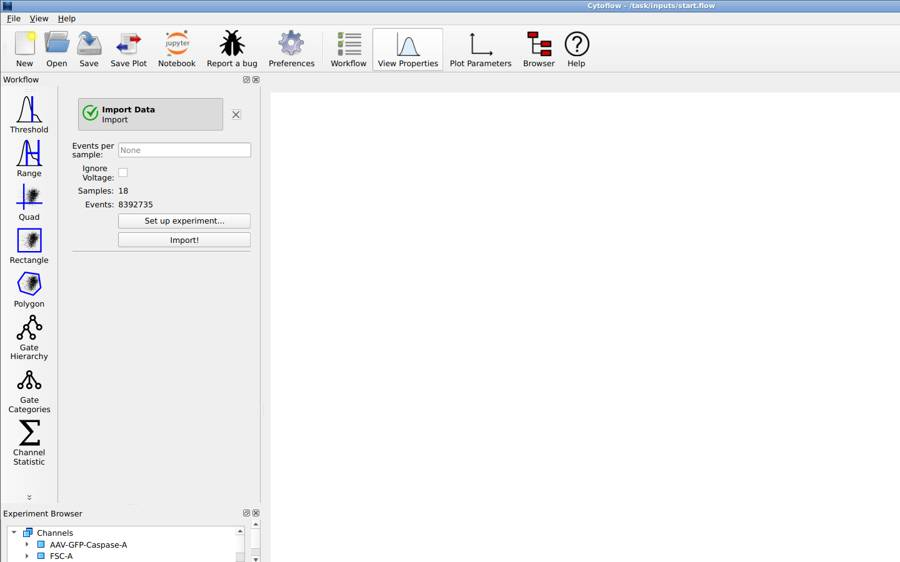
which xdotool wmctrl xprop xwininfo 2>&1; echo $DISPLAY; cat $(which cu) | head -50
/usr/bin/xdotool
/usr/bin/xprop
/usr/bin/xwininfo
:1
#!/bin/bash
# Computer-use helper: the agent's only way to act on the screen.
# cu screenshot [path] -> PNG of the screen (default /tmp/screen.png); prints path
# cu click X Y [left|right|double]
# cu move X Y | cu drag X1 Y1 X2 Y2 | cu scroll X Y up|down [N]
# cu type "text" (keystrokes) | cu paste "text" (clipboard) | cu key KEYS (e.g. ctrl+s, Return)
# cu cursor -> current mouse position
export DISPLAY=${DISPLAY:-:1}
cmd=$1; shift
case "$cmd" in
screenshot) out=${1:-/tmp/screen.png}; scrot -o "$out" && echo "$out" ;;
click) xdotool mousemove "$1" "$2"; case "${3:-left}" in
left) xdotool click 1;; right) xdotool click 3;; double) xdotool click --repeat 2 1;; esac ;;
move) xdotool mousemove "$1" "$2" ;;
drag) xdotool mousemove "$1" "$2" mousedown 1 mousemove --sync "$3" "$4" mouseup 1 ;;
scroll) xdotool mousemove "$1" "$2"; b=$([ "$3" = up ] && echo 4 || echo 5); xdotool click --repeat "${4:-3}" $b ;;
type) xdotool type --delay 50 -- "$1" ;;
# paste: put text on the clipboard (detached owner process so it survives this command) then ctrl+v
# paste: own the clipboard (no -loops: Qt asks for TARGETS first, then the text), press ctrl+v,
# give Qt a moment to fetch it, then release. Robust both locally and on Modal.
paste) printf '%s' "$1" | xclip -quiet -selection clipboard -i >/dev/null 2>&1 & cp=$!
sleep 0.3; xdotool key ctrl+v; sleep 1; kill $cp 2>/dev/null; true ;;
key) xdotool key -- "$1" ;;
cursor) xdotool getmouselocation ;;
*) sed -n '2,9p' "$0"; exit 1 ;;
esacexport DISPLAY=:1; xwininfo -root -tree | head -40
xwininfo: Window id: 0x21f (the root window) (has no name)
Root window id: 0x21f (the root window) (has no name)
Parent window id: 0x0 (none)
15 children:
0xe00019 "Qt Clipboard Requestor Window": () 3x3+0+0 +0+0
0xe00008 "cytoflow": () 1x1+0+0 +0+0
0xe00004 "Qt Selection Owner for cytoflow": () 3x3+0+0 +0+0
0x80000e "Openbox": ("" (none)) 1x1+-100+-100 +-100+-100
0x800062 (has no name): () 1x1+0+0 +0+0
1 child:
0x800063 (has no name): () 1x1+0+0 +1+1
0x800060 (has no name): () 1x1+0+0 +0+0
1 child:
0x800061 (has no name): () 1x1+0+0 +1+1
0x80005d (has no name): () 1x1+0+0 +0+0
1 child:
0x80005e (has no name): () 1x1+0+0 +1+1
0x800059 (has no name): ("OPENBOX_FOCUS_CYCLE_POPUP" "OPENBOX_FOCUS_CYCLE_POPUP") 1x1+0+0 +0+0
3 children:
0x80005c (has no name): () 1x1+0+0 +1+1
0x80005b (has no name): () 1x1+0+0 +1+1
0x80005a (has no name): () 1x1+0+0 +1+1
0x800056 (has no name): () 1x1+0+0 +0+0
2 children:
0x800058 (has no name): () 1x1+0+0 +1+1
0x800057 (has no name): () 1x1+0+0 +1+1
0x800055 (has no name): () 1x1+0+0 +0+0
0x800054 (has no name): () 1x1+0+0 +0+0
0x800053 (has no name): () 1x1+0+0 +0+0
0x800052 (has no name): () 1x1+0+0 +0+0
0x80005f (has no name): () 1x1+0+0 +0+0
0x800064 (has no name): () 2084x1196+0+0 +0+0
56 children:
0xe00006 "Cytoflow - /task/inputs/start.flow": ("cytoflow" "cytoflow") 2082x1171+1+20 +1+20
0x8000b0 (has no name): () 1x1+0+0 +0+0
0x8000af (has no name): () 1x1+0+0 +0+0
0x8000ae (has no name): () 1x1+0+0 +0+0
0x8000ad (has no name): () 1x1+0+0 +0+0cu click 600 9 double; sleep 2; export DISPLAY=:1; xwininfo -root -tree | grep Cytoflow; cu screenshot /tmp/screen.png
{
"file_path": "/tmp/screen.png"
} 0xe00006 "Cytoflow - /task/inputs/start.flow": ("cytoflow" "cytoflow") 1440x881+0+19 +0+19
/tmp/screen.png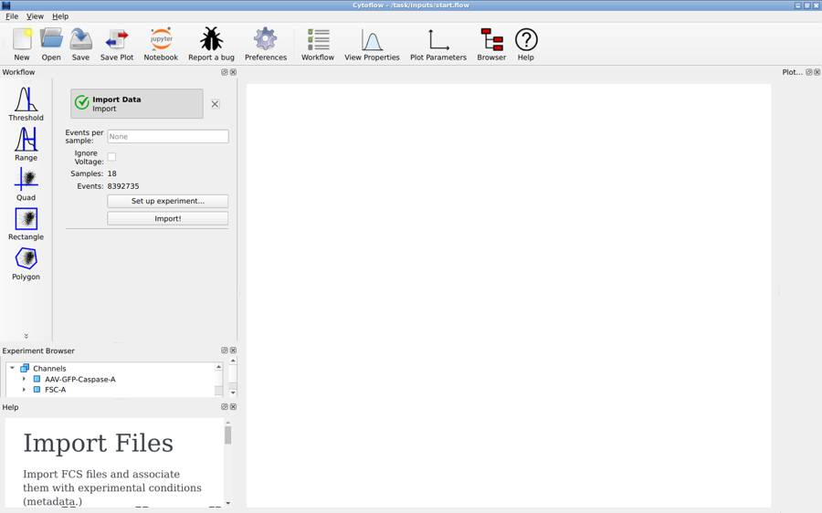
cu click 408 713; sleep 1; cu click 408 614; sleep 1; cu screenshot /tmp/screen.png
{
"file_path": "/tmp/screen.png"
}/tmp/screen.png
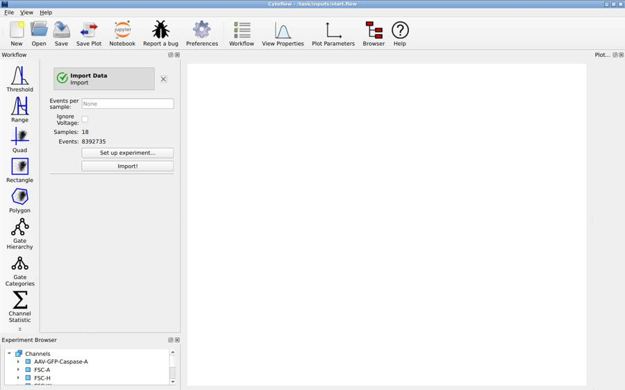
cu click 408 784; sleep 1; cu drag 1363 510 1060 510; sleep 2; cu screenshot /tmp/screen.png
{
"file_path": "/tmp/screen.png"
}/tmp/screen.png
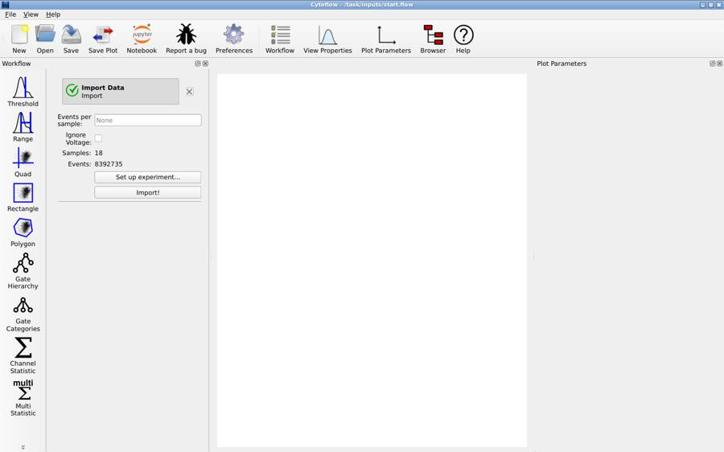
cu click 652 75; sleep 2; cu screenshot /tmp/screen.png
{
"file_path": "/tmp/screen.png"
}/tmp/screen.png
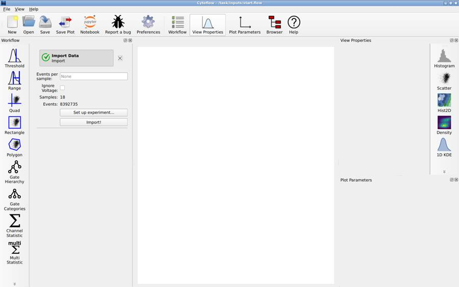
cu click 1393 390; sleep 3; cu screenshot /tmp/screen.png
{
"file_path": "/tmp/screen.png"
}/tmp/screen.png
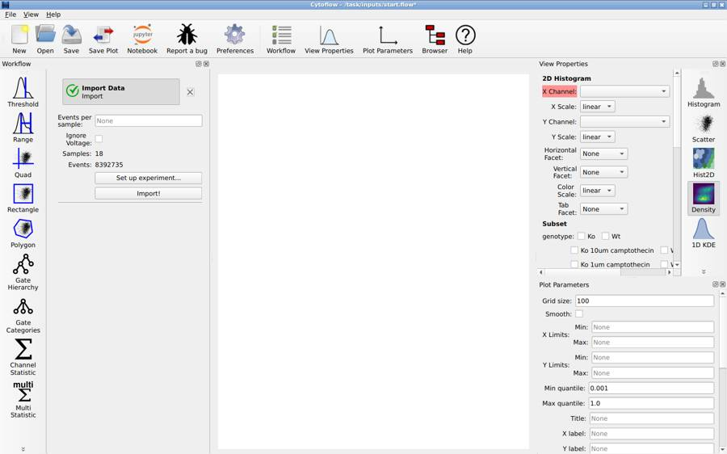
cu click 1237 181; sleep 1.5; cu screenshot /tmp/screen.png
{
"file_path": "/tmp/screen.png"
}/tmp/screen.png
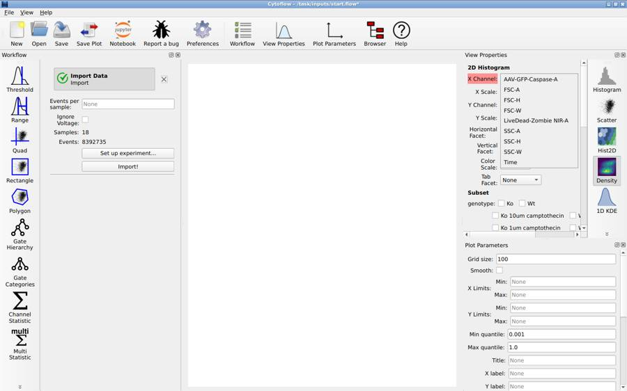
cu click 1175 206; sleep 1.5; cu click 1237 241; sleep 1.5; cu screenshot /tmp/screen.png
{
"file_path": "/tmp/screen.png"
}/tmp/screen.png
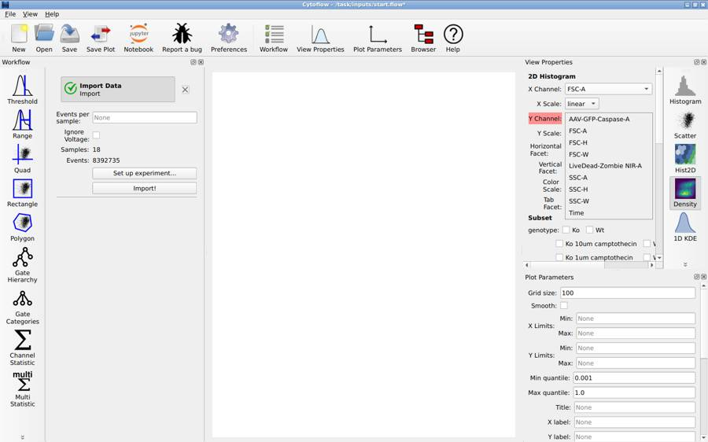
cu click 1175 361; sleep 20; cu screenshot /tmp/screen.png
{
"file_path": "/tmp/screen.png"
}/tmp/screen.png
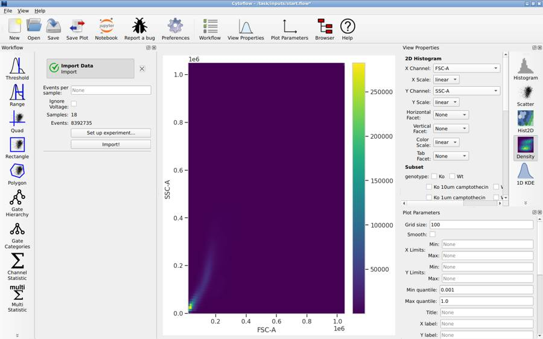
cu click 1183 377; sleep 1.5; cu screenshot /tmp/screen.png
{
"file_path": "/tmp/screen.png"
}/tmp/screen.png
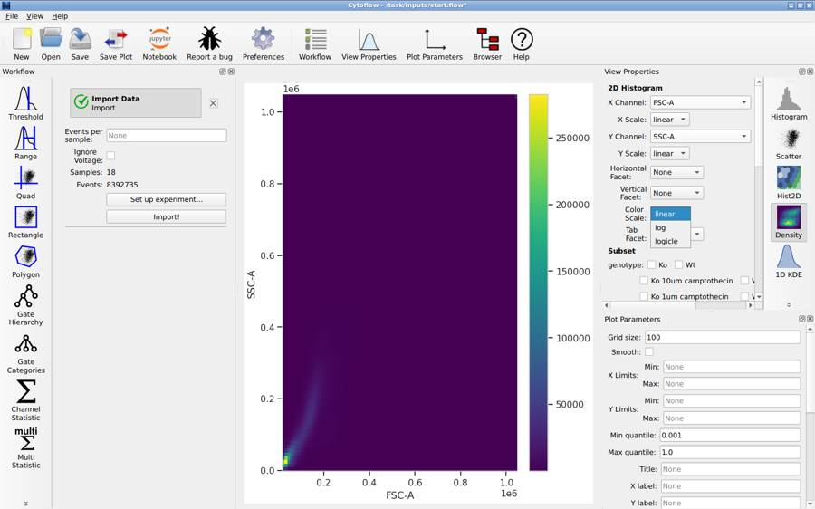
cu click 1167 402; sleep 20; cu screenshot /tmp/screen.png
{
"file_path": "/tmp/screen.png"
}/tmp/screen.png
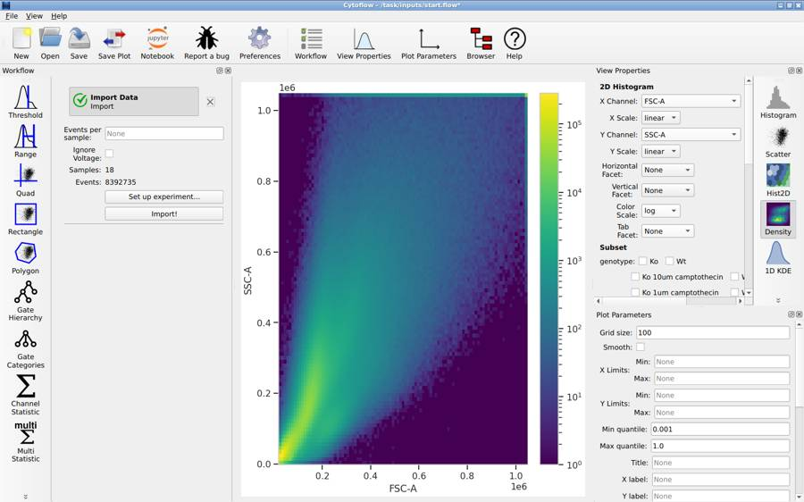
cu click 1183 211; sleep 1; cu click 1167 236; sleep 15; cu click 1183 271; sleep 1; cu screenshot /tmp/s1.png; cu click 1167 296; sleep 20; cu screenshot /tmp/screen.png
{
"file_path": "/tmp/screen.png"
}/tmp/s1.png /tmp/screen.png
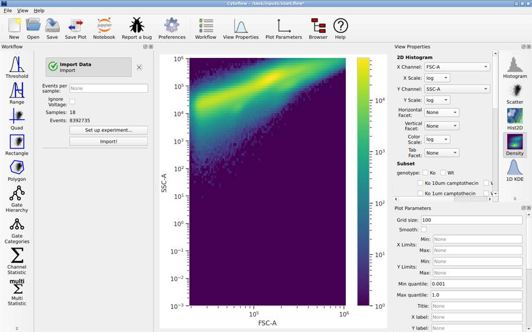
cu click 1183 211; sleep 1; cu click 1167 211; sleep 12; cu click 1183 271; sleep 1; cu click 1167 271; sleep 12; cu click 1292 678; cu type "500000"; cu key Tab; sleep 1; cu click 1292 739; cu type "500000"; cu key Tab; sleep 20; cu screenshot /tmp/screen.png
{
"file_path": "/tmp/screen.png"
}/tmp/screen.png
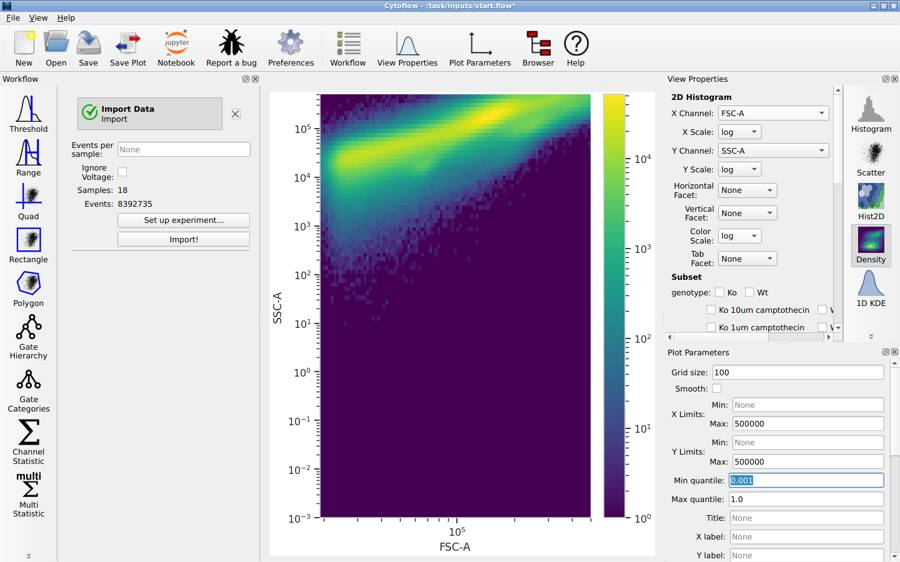
cu click 1183 211; sleep 1.5; cu screenshot /tmp/screen.png
{
"file_path": "/tmp/screen.png"
}/tmp/screen.png
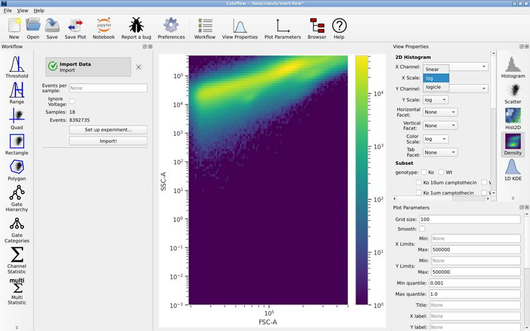
cu click 1175 188; sleep 12; cu click 1183 271; sleep 1.5; cu click 1175 248; sleep 25; cu screenshot /tmp/screen.png
{
"file_path": "/tmp/screen.png"
}/tmp/screen.png
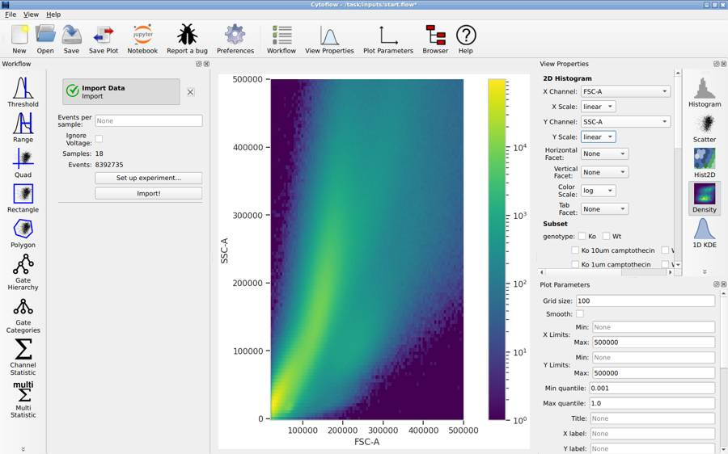
cu click 1393 180; sleep 3; cu screenshot /tmp/screen.png
{
"file_path": "/tmp/screen.png"
}/tmp/screen.png
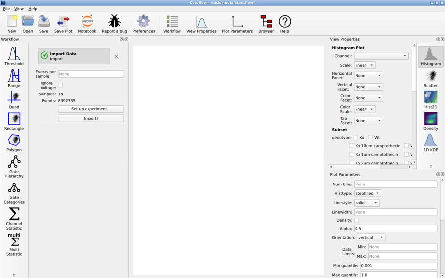
cu click 1233 181; sleep 1.5; cu click 1175 206; sleep 10; cu click 1178 211; sleep 1.5; cu click 1170 235; sleep 15; cu screenshot /tmp/screen.png
{
"file_path": "/tmp/screen.png"
}/tmp/screen.png
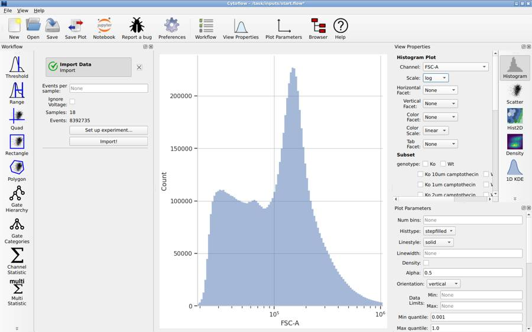
cu click 45 460; sleep 3; cu screenshot /tmp/screen.png
{
"file_path": "/tmp/screen.png"
}/tmp/screen.png
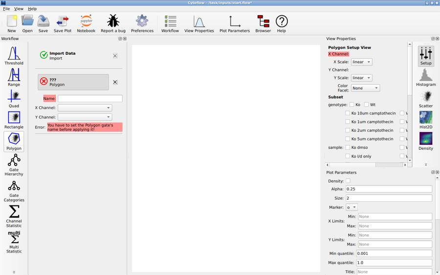
cu click 1139 592; sleep 1; cu click 294 322; cu type "cells"; cu key Tab; sleep 1; cu click 277 353; sleep 1.5; cu screenshot /tmp/screen.png
{
"file_path": "/tmp/screen.png"
}/tmp/screen.png
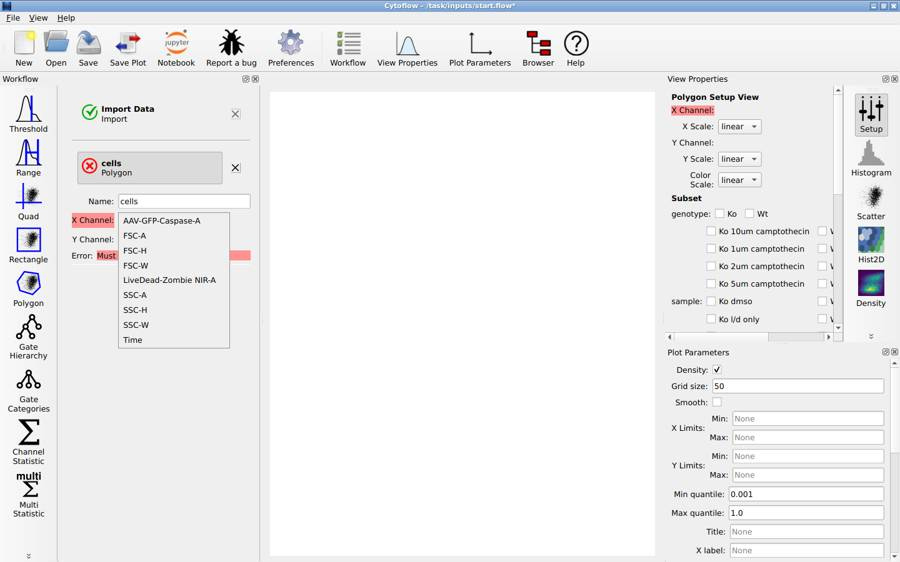
cu click 215 377; sleep 1.5; cu click 277 383; sleep 1.5; cu screenshot /tmp/screen.png
{
"file_path": "/tmp/screen.png"
}/tmp/screen.png
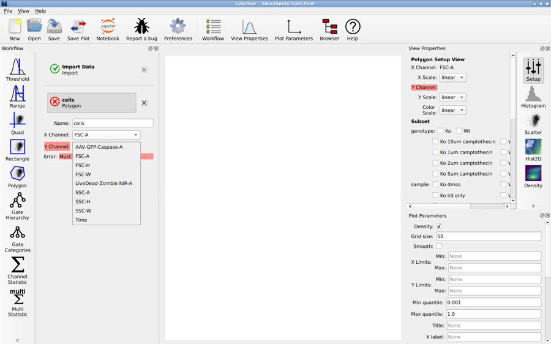
cu click 215 503; sleep 15; cu click 1183 202; sleep 1.5; cu click 1170 226; sleep 15; cu click 1183 254; sleep 1.5; cu click 1170 278; sleep 15; cu click 1183 288; sleep 1.5; cu click 1170 312; sleep 20; cu screenshot /tmp/screen.png
{
"file_path": "/tmp/screen.png"
}/tmp/screen.png
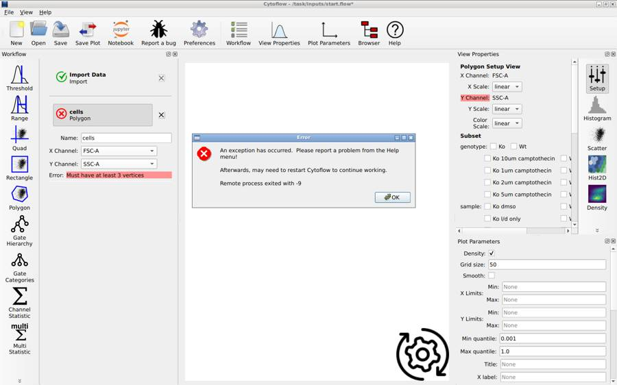
free -m; ps aux --sort=-rss | head -8; cat /sys/fs/cgroup/memory.max 2>/dev/null; cat /sys/fs/cgroup/memory.current 2>/dev/null; cat /sys/fs/cgroup/memory.events 2>/dev/null
Exit code 1
total used free shared buff/cache available
Mem: 7949 988 6819 15 393 6961
Swap: 0 0 0
USER PID %CPU %MEM VSZ RSS TTY STAT START TIME COMMAND
cfapp 841 0.7 5.0 3595680 412944 ? Sl 19:13 0:04 /opt/cytoflow/cytoflow-1.3.2/cytoflow
root 1019 1.1 2.8 5688524 230352 ? Sl 19:13 0:05 claude --verbose --output-format=stream-json --effort high --model claude-fable-5-2 --permission-mode=bypassPermissions --print
root 815 0.0 0.4 232272 39752 ? S 19:13 0:00 Xvfb :1 -screen 0 1440x900x24 -nolisten tcp
root 827 0.0 0.2 58956 23184 ? S 19:13 0:00 /usr/bin/python3 /usr/bin/websockify --web=/usr/share/novnc 6080 localhost:5900
cfapp 859 0.0 0.2 84344 22088 ? S 19:13 0:00 /opt/cytoflow/cytoflow-1.3.2/cytoflow -B -S -I -c from multiprocessing.resource_tracker import main;main(9)
cfapp 928 0.0 0.2 5238888 19604 ? Sl 19:13 0:00 /opt/cytoflow/cytoflow-1.3.2/_internal/PyQt5/Qt5/libexec/QtWebEngineProcess --type=zygote --application-name=cytoflow --webengine-schemes=qrc:sLV --lang=en
agent 834 0.0 0.1 142584 10968 ? Sl 19:13 0:00 openboxdate; whoami; ps -ef | grep -v grep | grep -i -E "cytoflow|start|supervis|sh " | head -20; dmesg 2>/dev/null | tail -5; ls /opt/cytoflow; ls / ; cat /proc/841/cmdline | tr '\0' ' '; echo; cat /proc/841/environ 2>/dev/null | tr '\0' '\n' | head -30
Tue Nov 10 19:22:50 UTC 2026 root root 809 1 0 19:13 ? 00:00:00 /usr/bin/tini -- /entrypoint.sh sh -c sleep infinity root 810 809 0 19:13 ? 00:00:00 /bin/bash /entrypoint.sh sh -c sleep infinity root 825 810 0 19:13 ? 00:00:00 /bin/bash /entrypoint.sh sh -c sleep infinity root 832 810 0 19:13 ? 00:00:00 /bin/bash /entrypoint.sh sh -c sleep infinity root 833 832 0 19:13 ? 00:00:00 runuser -u cfapp -- env DISPLAY=:1 HOME=/home/cfapp XDG_RUNTIME_DIR=/tmp/runtime-cfapp LANG=C.UTF-8 LC_ALL=C.UTF-8 bash -c umask 002; cd /task; exec start-cytoflow cfapp 835 833 0 19:13 ? 00:00:00 /bin/bash /usr/local/bin/start-cytoflow cfapp 841 835 0 19:13 ? 00:00:04 /opt/cytoflow/cytoflow-1.3.2/cytoflow cfapp 859 841 0 19:13 ? 00:00:00 /opt/cytoflow/cytoflow-1.3.2/cytoflow -B -S -I -c from multiprocessing.resource_tracker import main;main(9) cfapp 889 841 0 19:13 ? 00:00:00 /opt/cytoflow/cytoflow-1.3.2/_internal/PyQt5/Qt5/libexec/QtWebEngineProcess --type=zygote --no-zygote-sandbox --application-name=cytoflow --webengine-schemes=qrc:sLV --lang=en cfapp 910 841 0 19:13 ? 00:00:00 /opt/cytoflow/cytoflow-1.3.2/_internal/PyQt5/Qt5/libexec/QtWebEngineProcess --type=zygote --application-name=cytoflow --webengine-schemes=qrc:sLV --lang=en cfapp 912 910 0 19:13 ? 00:00:00 /opt/cytoflow/cytoflow-1.3.2/_internal/PyQt5/Qt5/libexec/QtWebEngineProcess --type=zygote --application-name=cytoflow --webengine-schemes=qrc:sLV --lang=en cfapp 928 912 0 19:13 ? 00:00:00 /opt/cytoflow/cytoflow-1.3.2/_internal/PyQt5/Qt5/libexec/QtWebEngineProcess --type=zygote --application-name=cytoflow --webengine-schemes=qrc:sLV --lang=en root 1017 1 0 19:13 ? 00:00:00 su root -s /bin/bash -c set -o pipefail; export PATH=$HOME/.local/bin:$PATH; cd /task; IS_SANDBOX=1 CLAUDE_CODE_MAX_OUTPUT_TOKENS=128000 ANTHROPIC_MODEL=claude-fable-5-2 CLAUDE_CODE_EFFORT_LEVEL=high claude --verbose --output-format=stream-json --effort high --model claude-fable-5-2 --permission-mode=bypassPermissions --print < /tmp/instruction.md > /logs/agent/claude-code.txt 2>&1; echo exit=$? root 1018 1017 0 19:13 ? 00:00:00 bash -c set -o pipefail; export PATH=$HOME/.local/bin:$PATH; cd /task; IS_SANDBOX=1 CLAUDE_CODE_MAX_OUTPUT_TOKENS=128000 ANTHROPIC_MODEL=claude-fable-5-2 CLAUDE_CODE_EFFORT_LEVEL=high claude --verbose --output-format=stream-json --effort high --model claude-fable-5-2 --permission-mode=bypassPermissions --print < /tmp/instruction.md > /logs/agent/claude-code.txt 2>&1; echo exit=$? [ 483.912962] [ 1019] 0 1019 1422131 44907 44905 2 0 1224704 0 0 claude [ 483.913008] [ 1440] 0 1440 1224 94 92 2 0 49152 0 0 bash [ 483.913053] [ 1444] 0 1444 784 29 28 1 0 53248 0 0 sleep [ 483.913098] oom-kill:constraint=CONSTRAINT_NONE,nodemask=(null),cpuset=/,mems_allowed=0,global_oom,task_memcg=/,task=cytoflow,pid=861,uid=1002 [ 483.913191] Out of memory: Killed process 861 (cytoflow) total-vm:8828284kB, anon-rss:7259432kB, file-rss:8kB, shmem-rss:28kB, UID:1002 pgtables:14864kB oom_score_adj:0 cytoflow-1.3.2 __modal bin bin.usr-is-merged boot dev entrypoint.sh etc home installed-agent lib lib.usr-is-merged lib64 logs media mnt opt proc root run sbin sbin.usr-is-merged srv sys task tmp usr var /opt/cytoflow/cytoflow-1.3.2/cytoflow MODAL_IMAGE_ID=im-6Rf48NC9EJrALJhIFiYZA5 QT_XKB_CONFIG_ROOT=/usr/share/X11/xkb NODE_OPTIONS=--dns-result-order=ipv4first PYTHONHASHSEED=0 OFFLINE=0 MODAL_SANDBOX_ID=sb-01M73E24QYMCPXEMGVMT4KF60P SCREEN_GEOMETRY=1440x900x24 MODAL_CLOUD_PROVIDER=CLOUD_PROVIDER_UNSPECIFIED PWD=/task SOURCE_DATE_EPOCH=1641013200 LOGNAME=cfapp ORT_INTER_OP_NUM_THREADS=4 OPENBLAS_NUM_THREADS=4 ORT_INTRA_OP_NUM_THREADS=4 HOME=/home/cfapp LANG=C.UTF-8 MODAL_REGION=us-east SSL_CERT_DIR=/etc/ssl/certs PIP_DEFAULT_TIMEOUT=30 UV_BREAK_SYSTEM_PACKAGES=1 PYTHONPATH=/pkg/:/root/ TERM=xterm XLOCALEDIR=/usr/share/X11/locale USER=cfapp DISPLAY=:1 SHLVL=2 PIP_ROOT_USER_ACTION=ignore MODAL_CONTAINER_ARGUMENTS_PATH=/__modal/.container-arguments/data.bin XDG_RUNTIME_DIR=/tmp/runtime-cfapp BLIS_NUM_THREADS=4
cat /usr/local/bin/start-cytoflow; echo ------; cat /entrypoint.sh
#!/bin/bash
# Launch Cytoflow full-screen-ish; restart it if the agent closes it.
BIN=$(find /opt/cytoflow -maxdepth 3 -type f -name 'cytoflow' -perm -u+x | head -1)
[ -z "$BIN" ] && { echo "cytoflow binary not found under /opt/cytoflow"; exit 1; }
while true; do
"$BIN" >/tmp/cytoflow.log 2>&1
sleep 1
done
------
#!/bin/bash
# Starts: virtual screen -> window manager -> VNC/noVNC (for human viewing) -> Cytoflow.
set -e
# Locale must reach the GUI process explicitly (Modal does not propagate image ENV through runuser);
# without it Qt pops "failed to create compose table" and swallows keystrokes.
export LANG=C.UTF-8 LC_ALL=C.UTF-8
if [ "${OFFLINE:-1}" = "1" ]; then
# Block all outbound traffic except replies to inbound connections (so noVNC viewing still works).
if iptables -P OUTPUT DROP 2>/dev/null; then
iptables -A OUTPUT -o lo -j ACCEPT
iptables -A OUTPUT -m state --state ESTABLISHED,RELATED -j ACCEPT
echo "[env] offline mode: outbound network blocked"
else
echo "[env] WARNING: could not block network (run with --cap-add NET_ADMIN)"
fi
fi
# Bind-mounted outputs folder: make it writable by both the agent and the Cytoflow user.
chown agent:task /task/outputs 2>/dev/null; chmod 2777 /task/outputs 2>/dev/null || true
as_agent() { runuser -u agent -- env DISPLAY=$DISPLAY HOME=/home/agent LANG=$LANG LC_ALL=$LC_ALL "$@"; }
Xvfb $DISPLAY -screen 0 $SCREEN_GEOMETRY -nolisten tcp &
for i in $(seq 1 50); do xdpyinfo -display $DISPLAY >/dev/null 2>&1 && break; sleep 0.2; done
as_agent openbox &
x11vnc -display $DISPLAY -forever -shared -nopw -quiet -rfbport 5900 &
websockify --web=/usr/share/novnc 6080 localhost:5900 >/dev/null 2>&1 &
echo "[env] watch the screen at http://localhost:6080/vnc.html?autoconnect=1&resize=scale"
as_cfapp() { runuser -u cfapp -- env DISPLAY=$DISPLAY HOME=/home/cfapp XDG_RUNTIME_DIR=/tmp/runtime-cfapp LANG=$LANG LC_ALL=$LC_ALL "$@"; }
mkdir -p /tmp/runtime-cfapp && chown cfapp /tmp/runtime-cfapp && chmod 700 /tmp/runtime-cfapp
# umask 002: files Cytoflow saves into /task/outputs stay readable/writable by the agent.
# cd /task: Cytoflow's open/save dialogs start in the task folder.
as_cfapp bash -c "umask 002; cd /task; exec start-cytoflow" &
waitcu click 915 461; sleep 1; cu click 20 28; sleep 1.5; cu screenshot /tmp/screen.png
{
"file_path": "/tmp/screen.png"
}/tmp/screen.png
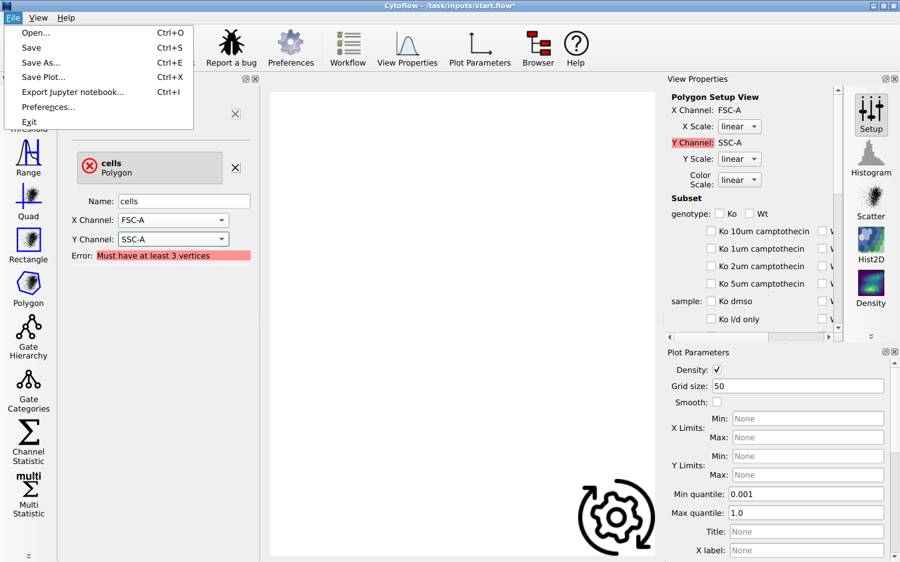
cu click 47 195; sleep 3; cu screenshot /tmp/screen.png
{
"file_path": "/tmp/screen.png"
}/tmp/screen.png

sleep 20; cu screenshot /tmp/screen.png; ps -eo pid,rss,etime,cmd --sort=-rss | grep cytoflow | head -5; tail -5 /tmp/cytoflow.log
{
"file_path": "/tmp/screen.png"
}/tmp/screen.png 1541 521916 00:26 /opt/cytoflow/cytoflow-1.3.2/cytoflow 1556 314668 00:24 /opt/cytoflow/cytoflow-1.3.2/cytoflow --multiprocessing-fork tracker_fd=10 pipe_handle=14 1620 72032 00:22 /opt/cytoflow/cytoflow-1.3.2/_internal/PyQt5/Qt5/libexec/QtWebEngineProcess --type=zygote --application-name=cytoflow --webengine-schemes=qrc:sLV --lang=en 1603 47888 00:22 /opt/cytoflow/cytoflow-1.3.2/_internal/PyQt5/Qt5/libexec/QtWebEngineProcess --type=zygote --application-name=cytoflow --webengine-schemes=qrc:sLV --lang=en 1582 47604 00:22 /opt/cytoflow/cytoflow-1.3.2/_internal/PyQt5/Qt5/libexec/QtWebEngineProcess --type=zygote --no-zygote-sandbox --application-name=cytoflow --webengine-schemes=qrc:sLV --lang=en QXcbIntegration: Cannot create platform OpenGL context, neither GLX nor EGL are enabled

cat > /tmp/mem.sh <<'EOF'
#!/bin/bash
ps -eo pid,rss,cmd --sort=-rss | grep 'cytoflow' | grep -v grep | head -2 | awk '{printf "%s %d MB %s\n",$1,$2/1024,$4}'
free -m | awk 'NR==2{print "avail MB:",$7}'
EOF
chmod +x /tmp/mem.sh
cu click 600 9 double; sleep 2; cu click 90 75; sleep 2; cu screenshot /tmp/screen.png{
"file_path": "/tmp/screen.png"
}/tmp/screen.png

cu click 706 576; cu paste "/task/inputs/start.flow"; sleep 0.5; cu key Return; sleep 3; cu screenshot /tmp/screen.png
{
"file_path": "/tmp/screen.png"
}/tmp/screen.png

cu click 738 427; for i in 1 2 3 4 5; do sleep 10; /tmp/mem.sh; done; cu click 408 713; sleep 1; cu click 408 614; sleep 1; cu screenshot /tmp/screen.png
{
"file_path": "/tmp/screen.png"
}1556 1463 MB --multiprocessing-fork 1541 521 MB avail MB: 5517 1556 1463 MB --multiprocessing-fork 1541 521 MB avail MB: 5564 1556 1463 MB --multiprocessing-fork 1541 521 MB avail MB: 5593 1556 1463 MB --multiprocessing-fork 1541 521 MB avail MB: 5602 1556 1463 MB --multiprocessing-fork 1541 521 MB avail MB: 5603 /tmp/screen.png

cu click 408 784; sleep 1; cu drag 1232 803 1232 520; sleep 1; cu click 45 460; sleep 3; /tmp/mem.sh; cu screenshot /tmp/screen.png
{
"file_path": "/tmp/screen.png"
}1556 1463 MB --multiprocessing-fork 1541 528 MB avail MB: 5598 /tmp/screen.png
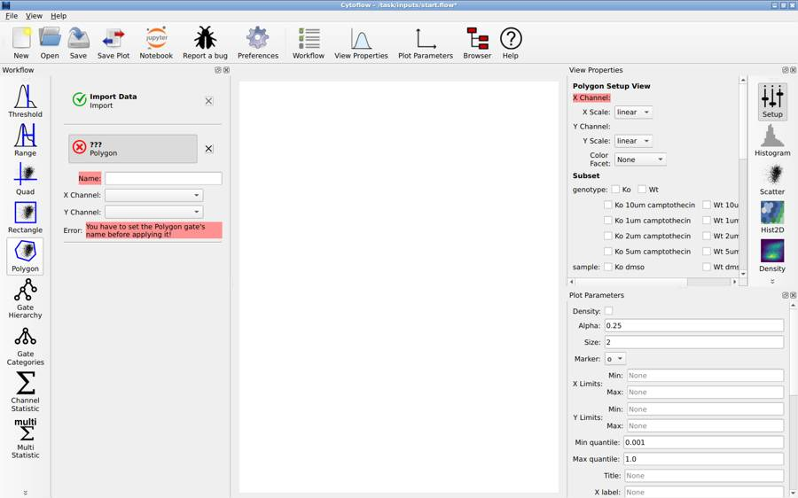
cu click 1098 562; sleep 1; cu scroll 1180 420 down 5; sleep 1; cu screenshot /tmp/screen.png
{
"file_path": "/tmp/screen.png"
}/tmp/screen.png
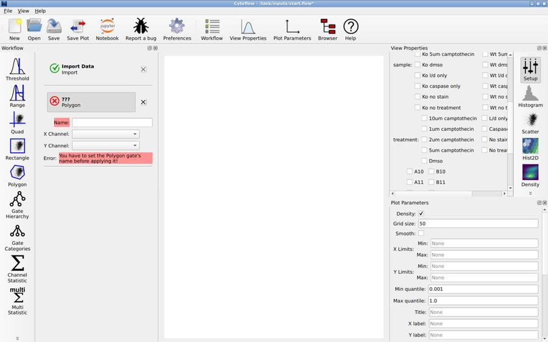
cu click 1115 311; sleep 0.7; cu click 1273 395; sleep 0.7; cu scroll 1180 300 up 10; sleep 0.5; cu click 294 322; cu type "cells"; cu key Tab; sleep 1; cu click 277 353; sleep 1.5; cu click 215 377; sleep 2; cu click 277 383; sleep 1.5; cu click 215 503; sleep 12; /tmp/mem.sh; cu screenshot /tmp/screen.png
{
"file_path": "/tmp/screen.png"
}1556 1482 MB --multiprocessing-fork 1541 528 MB avail MB: 5514 /tmp/screen.png
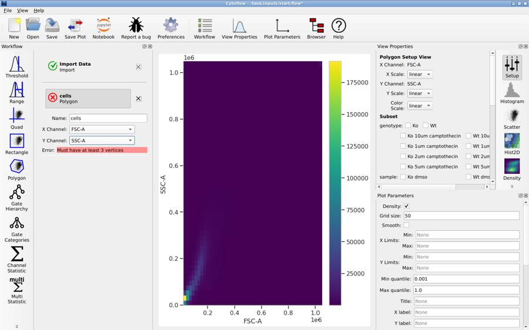
cu click 1140 202; sleep 1.5; cu click 1130 226; sleep 8; /tmp/mem.sh; cu click 1140 254; sleep 1.5; cu click 1130 278; sleep 8; /tmp/mem.sh; cu click 1140 288; sleep 1.5; cu click 1130 312; sleep 10; /tmp/mem.sh; cu screenshot /tmp/screen.png
{
"file_path": "/tmp/screen.png"
}1556 1483 MB --multiprocessing-fork 1541 528 MB avail MB: 5515 1556 1483 MB --multiprocessing-fork 1541 528 MB avail MB: 5489 1556 1485 MB --multiprocessing-fork 1541 528 MB avail MB: 5521 /tmp/screen.png
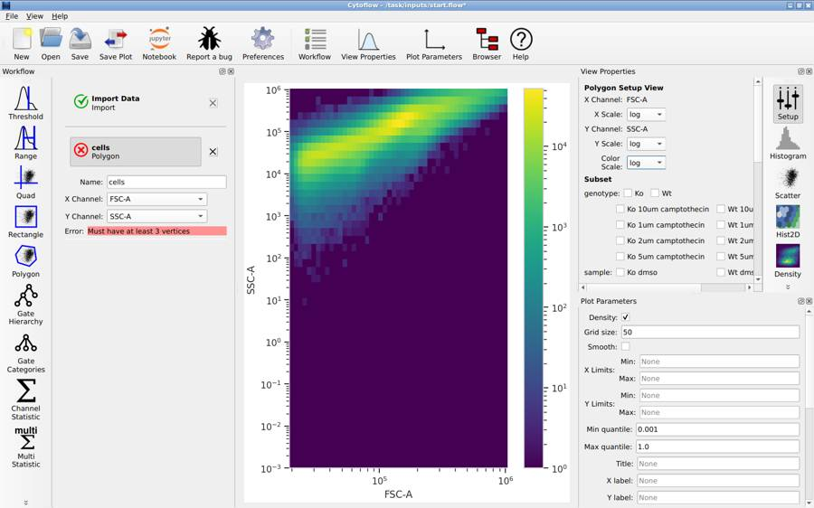
cu click 1272 700; cu type "3000"; cu key Tab; sleep 8; cu click 1255 588 double; cu key ctrl+a; cu type "100"; cu key Tab; sleep 10; /tmp/mem.sh; cu screenshot /tmp/screen.png
{
"file_path": "/tmp/screen.png"
}1556 1486 MB --multiprocessing-fork 1541 528 MB avail MB: 5562 /tmp/screen.png
for p in "661 517" "623 437" "623 299" "706 166" "882 166" "882 299"; do cu click $p; sleep 0.8; done; cu click 756 484 double; sleep 25; /tmp/mem.sh; cu screenshot /tmp/screen.png
{
"file_path": "/tmp/screen.png"
}1556 1486 MB --multiprocessing-fork 1541 528 MB avail MB: 5578 /tmp/screen.png
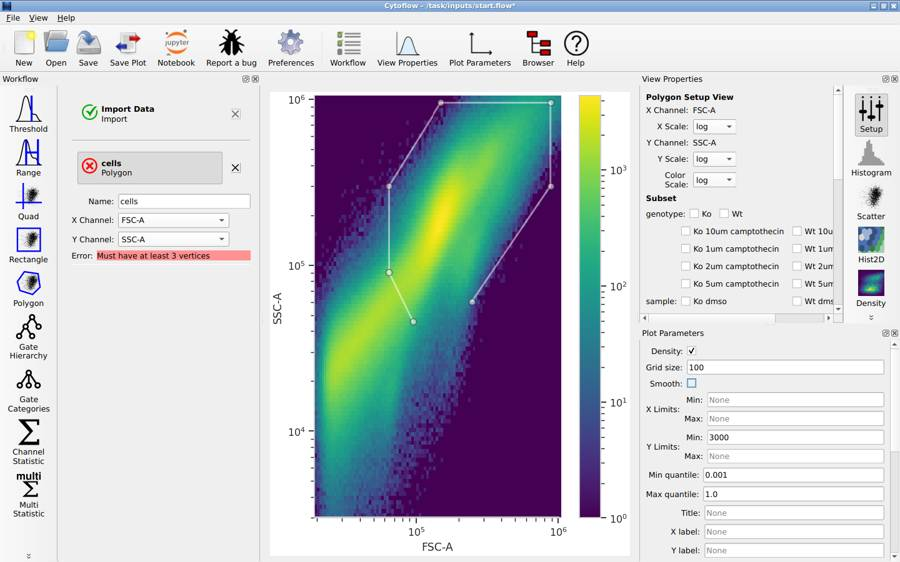
cu click 661 517 double; sleep 20; /tmp/mem.sh; cu screenshot /tmp/screen.png
{
"file_path": "/tmp/screen.png"
}1556 1548 MB --multiprocessing-fork 1541 529 MB avail MB: 5530 /tmp/screen.png
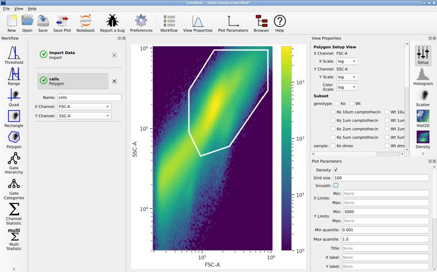
cu click 20 28; sleep 1; cu click 65 100; sleep 2; cu screenshot /tmp/screen.png
{
"file_path": "/tmp/screen.png"
}/tmp/screen.png
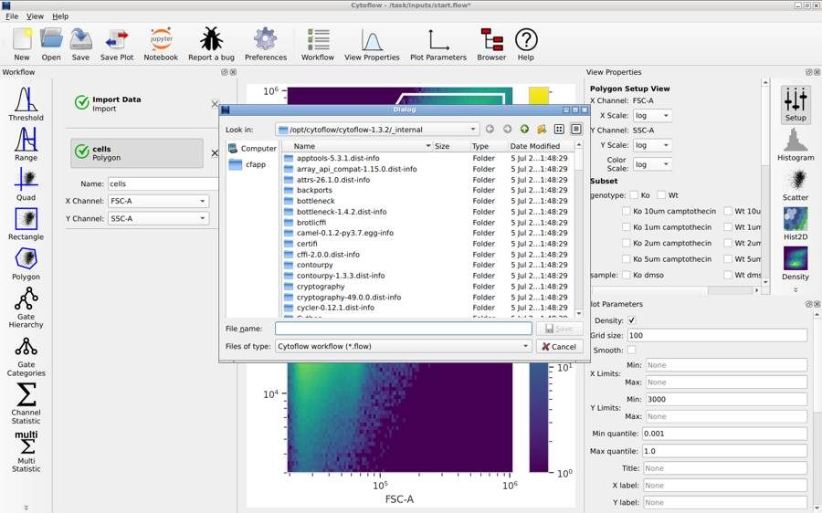
cu click 706 576; cu paste "/task/outputs/workflow.flow"; sleep 0.5; cu key Return; sleep 3; ls -la /task/outputs; grep -n -A12 "vertices" /task/outputs/workflow.flow | head -40; cu screenshot /tmp/screen.png
{
"file_path": "/tmp/screen.png"
}total 32 drwxrwsrwx 2 agent task 4096 Nov 10 19:28 . drwxr-xr-x 4 root root 4096 Nov 5 22:25 .. -rw-rw-r-- 1 cfapp task 21384 Nov 10 19:28 workflow.flow 690: vertices: 691- - !!python/tuple 692- - 95299.72234403258 693- - 45227.05799439169 694- - !!python/tuple 695- - 64426.18584212682 696- - 89758.2120893345 697- - !!python/tuple 698- - 64426.18584212682 699- - 297856.4025670722 700- - !!python/tuple 701- - 150208.0314985869 702- - 944834.512815768 /tmp/screen.png
cu click 45 460; sleep 3; cu click 1098 562; sleep 1; cu screenshot /tmp/screen.png
{
"file_path": "/tmp/screen.png"
}/tmp/screen.png
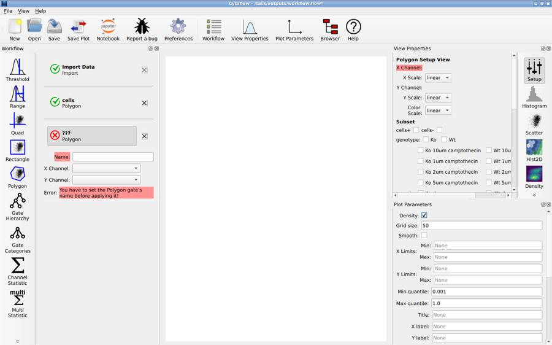
cu click 1086 339; sleep 0.7; cu scroll 1180 420 down 5; sleep 1; cu screenshot /tmp/screen.png
{
"file_path": "/tmp/screen.png"
}/tmp/screen.png
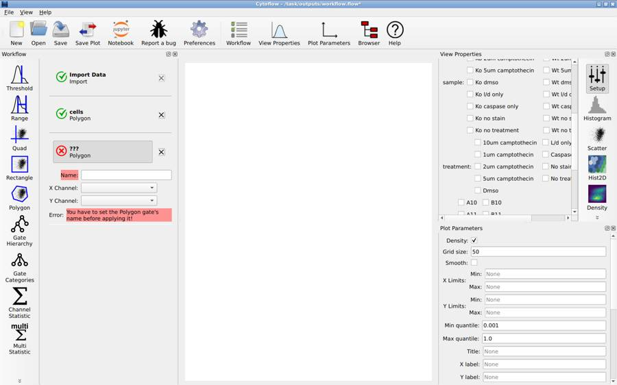
cu click 1115 333; sleep 0.7; cu click 1273 417; sleep 0.7; cu scroll 1180 300 up 10; sleep 0.5; cu click 294 409; cu type "singlets"; cu key Tab; sleep 1; cu click 277 439; sleep 1.5; cu click 215 464; sleep 2; cu click 277 469; sleep 1.5; cu screenshot /tmp/s1.png; cu click 215 518; sleep 12; /tmp/mem.sh; cu screenshot /tmp/screen.png
{
"file_path": "/tmp/screen.png"
}/tmp/s1.png 1556 1552 MB --multiprocessing-fork 1541 534 MB avail MB: 5466 /tmp/screen.png
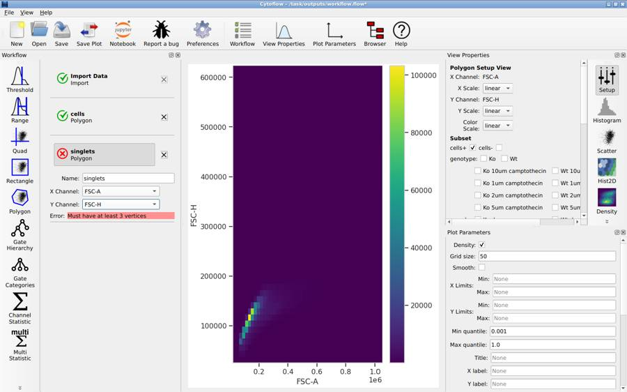
cu click 1140 288; sleep 1.5; cu click 1130 312; sleep 8; cu click 1272 670; cu type "500000"; cu key Tab; sleep 6; cu click 1272 730; cu type "400000"; cu key Tab; sleep 6; cu click 1255 588 double; cu key ctrl+a; cu type "100"; cu key Tab; sleep 10; /tmp/mem.sh; cu screenshot /tmp/screen.png
{
"file_path": "/tmp/screen.png"
}1556 1553 MB --multiprocessing-fork 1541 534 MB avail MB: 5515 /tmp/screen.png
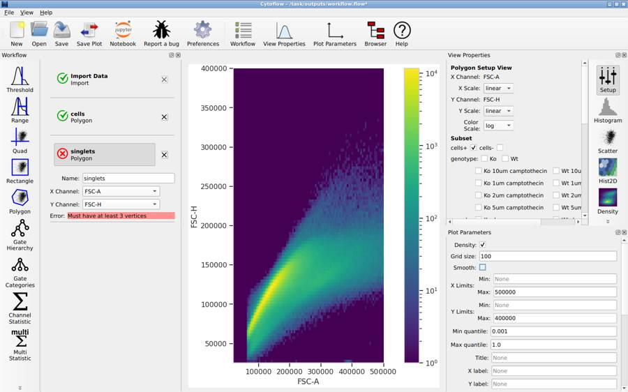
grep -c "python/tuple" /task/outputs/workflow.flow; for p in "564 785" "564 738" "765 175" "850 175" "850 338"; do cu click $p; sleep 0.8; done; cu click 564 785 double; sleep 20; /tmp/mem.sh; cu screenshot /tmp/screen.png
{
"file_path": "/tmp/screen.png"
}10 1556 1563 MB --multiprocessing-fork 1541 534 MB avail MB: 5493 /tmp/screen.png
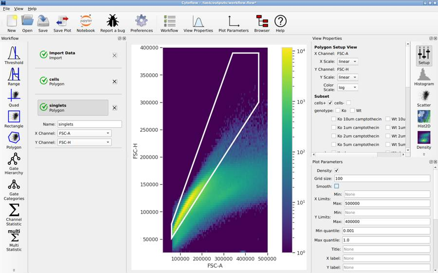
cu key ctrl+s; sleep 3; ls -la /task/outputs; cu click 1393 250; sleep 3; cu screenshot /tmp/screen.png
{
"file_path": "/tmp/screen.png"
}total 40 drwxrwsrwx 2 agent task 4096 Nov 10 19:28 . drwxr-xr-x 4 root root 4096 Nov 5 22:25 .. -rw-rw-r-- 1 cfapp task 31722 Nov 10 19:31 workflow.flow /tmp/screen.png
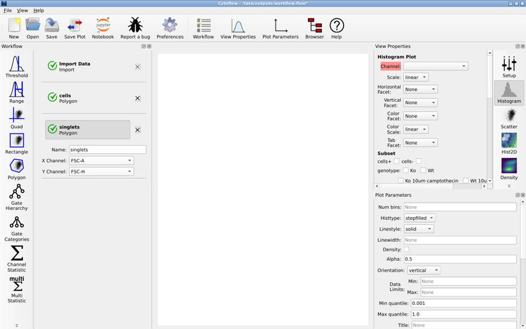
cu click 1150 281; sleep 1.5; cu screenshot /tmp/screen.png
{
"file_path": "/tmp/screen.png"
}/tmp/screen.png
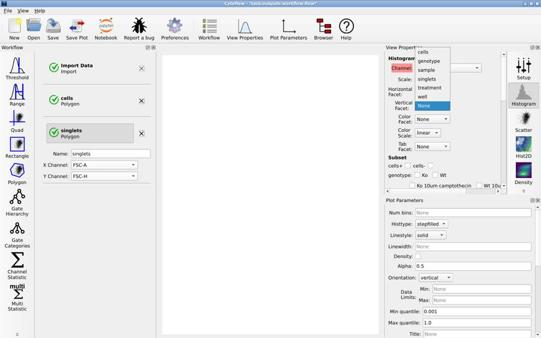
cu click 1143 233; sleep 1.5; cu click 1150 317; sleep 1.5; cu click 1141 197; sleep 1.5; cu click 1133 211; sleep 1.5; cu click 1130 259; sleep 1; cu click 1086 441; sleep 1; cu scroll 1180 440 down 10; sleep 1; cu screenshot /tmp/screen.png
{
"file_path": "/tmp/screen.png"
}/tmp/screen.png
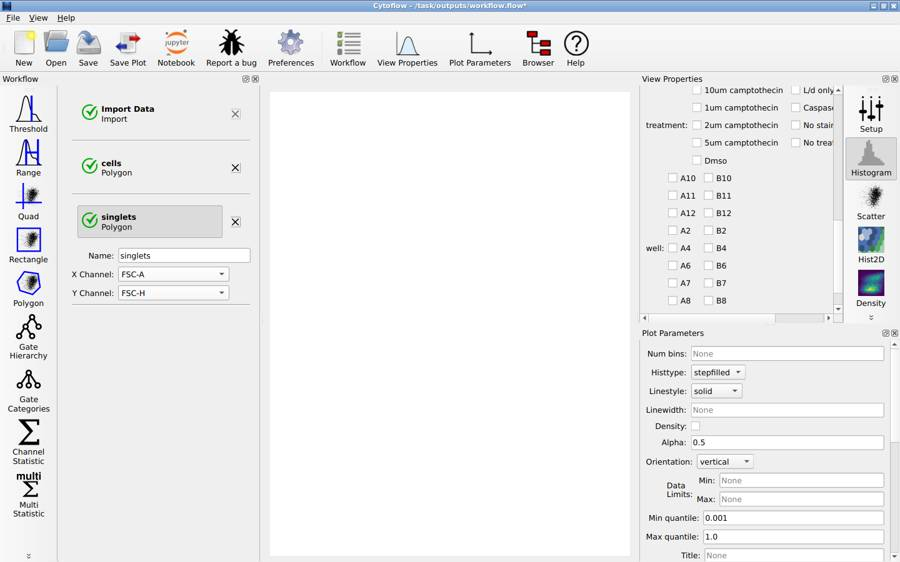
cu scroll 1180 440 up 2; sleep 1; cu screenshot /tmp/screen.png
{
"file_path": "/tmp/screen.png"
}/tmp/screen.png
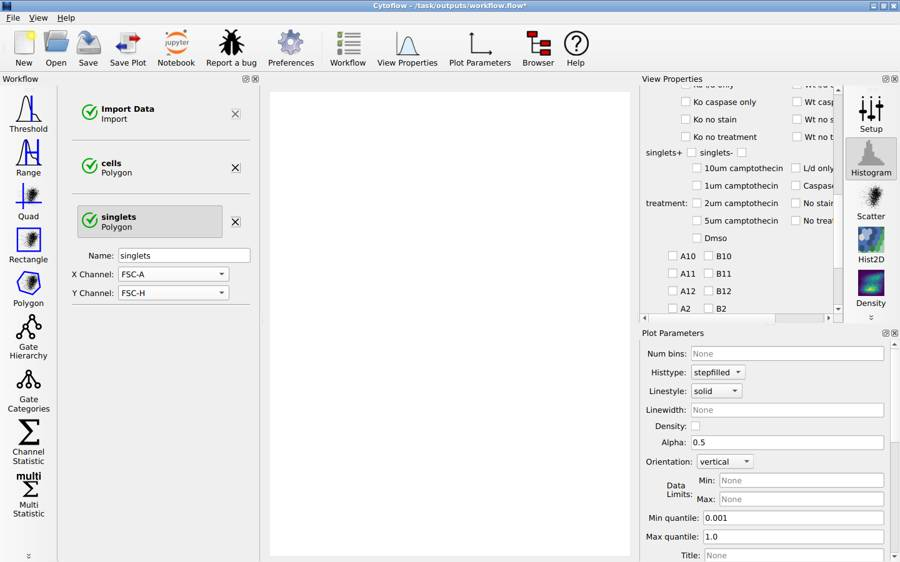
cu click 1106 244; sleep 1; cu scroll 1180 300 up 15; sleep 1; cu click 1190 181; sleep 1.5; cu screenshot /tmp/s1.png; cu click 1180 278; sleep 20; /tmp/mem.sh; cu screenshot /tmp/screen.png
{
"file_path": "/tmp/screen.png"
}/tmp/s1.png 1556 1551 MB --multiprocessing-fork 1541 536 MB avail MB: 5493 /tmp/screen.png
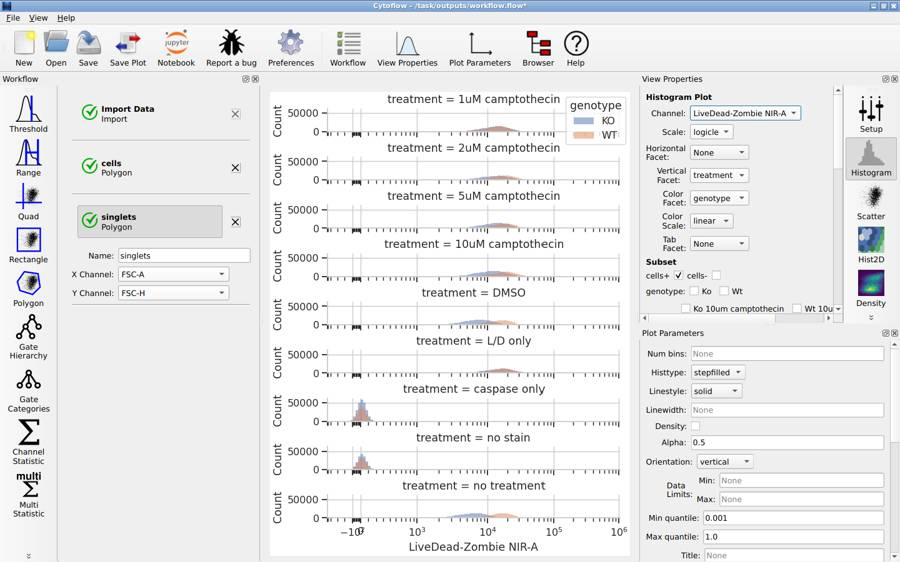
cu scroll 1180 440 down 10; sleep 0.7; cu scroll 1180 440 up 2; sleep 1; cu click 1115 269; sleep 6; cu click 1273 269; sleep 6; cu click 1115 381; sleep 6; cu click 1273 353; sleep 12; cu screenshot /tmp/screen.png
{
"file_path": "/tmp/screen.png"
}/tmp/screen.png
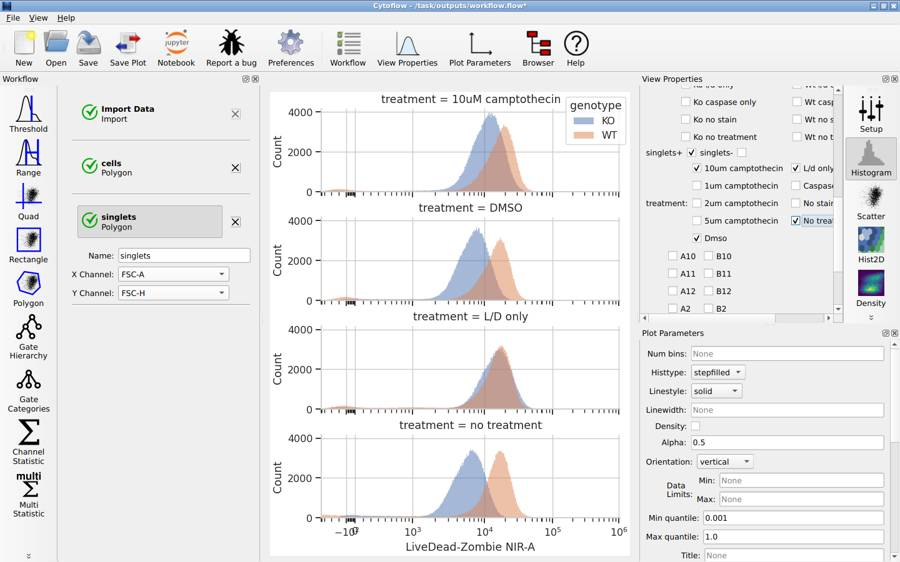
cu click 1115 269; sleep 5; cu click 1273 269; sleep 5; cu click 1115 381; sleep 5; cu click 1273 353; sleep 8; cu scroll 1180 300 up 15; sleep 1; cu click 1190 181; sleep 1.5; cu screenshot /tmp/s1.png
{
"file_path": "/tmp/s1.png"
}/tmp/s1.png
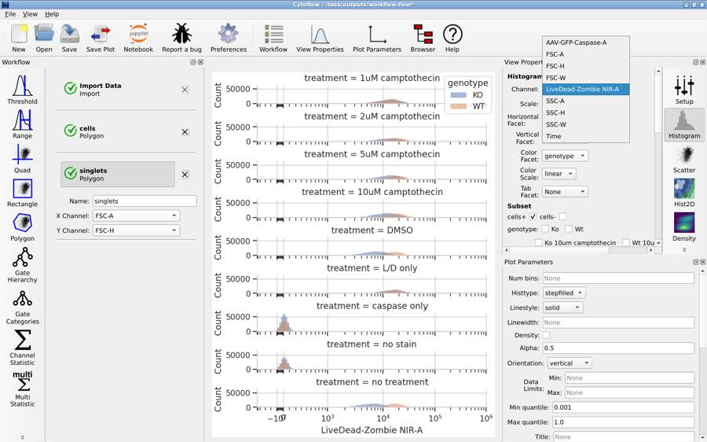
cu click 1175 87; sleep 20; /tmp/mem.sh; cu screenshot /tmp/screen.png
{
"file_path": "/tmp/screen.png"
}1556 1554 MB --multiprocessing-fork 1541 536 MB avail MB: 5482 /tmp/screen.png
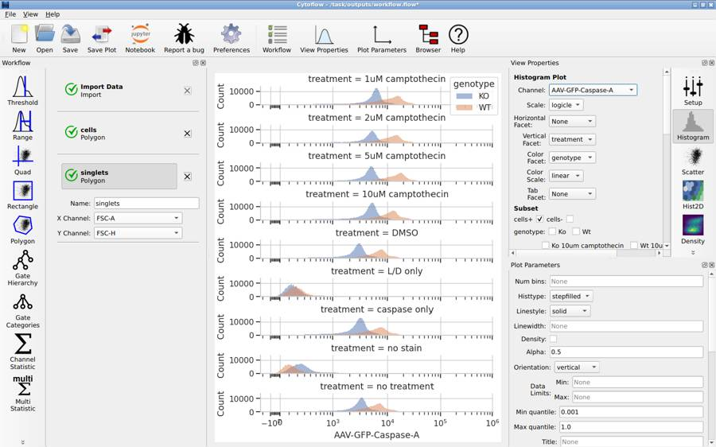
cu click 1393 460; sleep 3; cu screenshot /tmp/screen.png
{
"file_path": "/tmp/screen.png"
}/tmp/screen.png
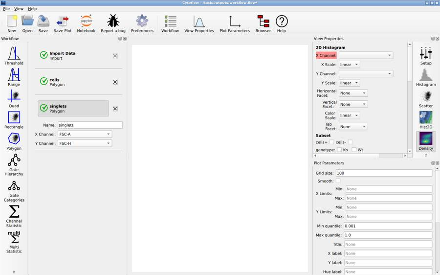
thinking
The caspase signal shifts the whole population (WT brighter than KO in every stained well) instead of forming a distinct positive cluster. I'm setting up caspase-vs-Zombie 2D plots to decide where the gates can defensibly go.
cu click 1140 211; sleep 1.2; cu click 1130 259; sleep 1; cu click 1140 271; sleep 1.2; cu click 1130 319; sleep 1; cu click 1155 305; sleep 1.2; cu click 1141 185; sleep 1; cu click 1155 341; sleep 1.2; cu click 1143 293; sleep 1; cu click 1140 377; sleep 1.2; cu click 1130 401; sleep 1; cu click 1086 465; sleep 1; cu scroll 1180 440 down 10; sleep 0.7; cu scroll 1180 440 up 2; sleep 1; cu screenshot /tmp/screen.png
{
"file_path": "/tmp/screen.png"
}/tmp/screen.png
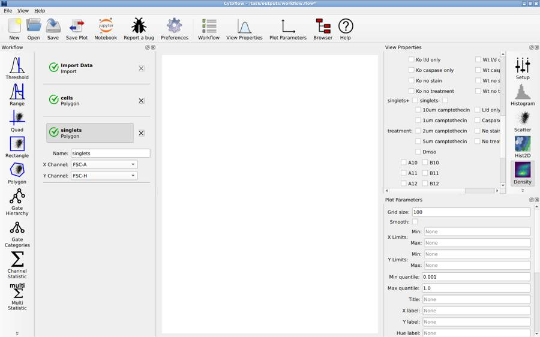
cu click 1106 268; sleep 0.7; cu click 1115 293; sleep 0.7; cu click 1273 293; sleep 0.7; cu click 1273 321; sleep 0.7; cu click 1273 377; sleep 0.7; cu scroll 1180 300 up 15; sleep 1; cu click 1195 181; sleep 1.5; cu click 1175 182; sleep 2; cu click 1195 241; sleep 1.5; cu screenshot /tmp/s1.png; cu click 1185 338; sleep 20; /tmp/mem.sh; cu screenshot /tmp/screen.png
{
"file_path": "/tmp/screen.png"
}/tmp/s1.png 1556 1577 MB --multiprocessing-fork 1541 536 MB avail MB: 5498 /tmp/screen.png
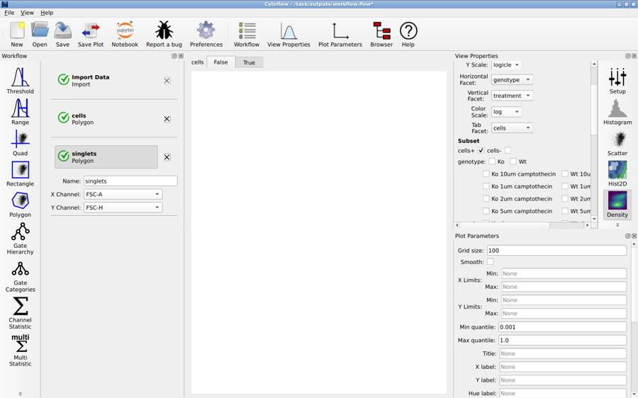
cu scroll 1180 300 up 20; sleep 1; cu screenshot /tmp/screen.png
{
"file_path": "/tmp/screen.png"
}/tmp/screen.png
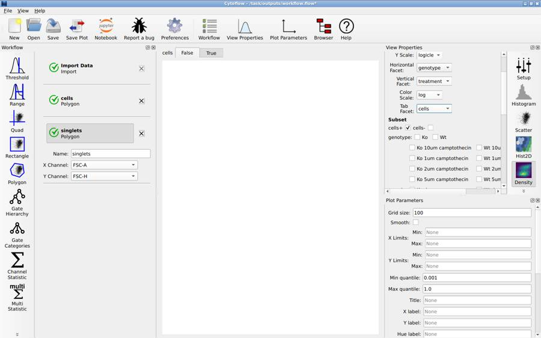
for i in 1 2 3 4 5 6 7 8; do cu click 1341 145; sleep 0.2; done; sleep 1; cu screenshot /tmp/screen.png
{
"file_path": "/tmp/screen.png"
}/tmp/screen.png
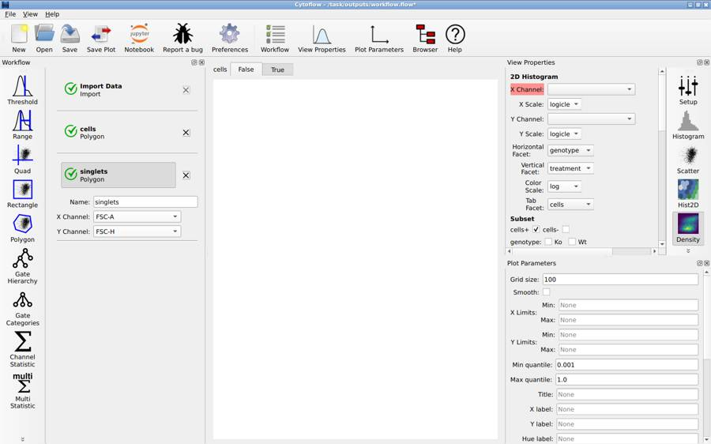
cu click 1155 414; sleep 1.2; cu screenshot /tmp/s1.png; cu click 1135 558; sleep 1.5; cu click 1195 181; sleep 1.5; cu click 1175 182; sleep 2; cu click 1195 241; sleep 1.5; cu screenshot /tmp/s2.png; cu click 1185 338; sleep 20; /tmp/mem.sh; cu screenshot /tmp/screen.png
{
"file_path": "/tmp/screen.png"
}/tmp/s1.png /tmp/s2.png 1556 1538 MB --multiprocessing-fork 1541 536 MB avail MB: 5518 /tmp/screen.png
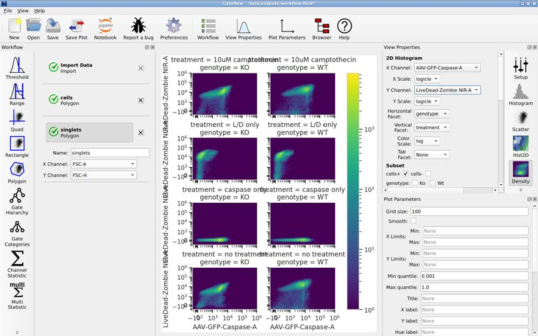
cu click 1155 305; sleep 1.2; cu click 1135 425; sleep 8; cu click 1155 341; sleep 1.2; cu click 1141 269; sleep 8; cu scroll 1050 480 down 10; sleep 0.7; cu scroll 1050 480 up 2; sleep 1; cu screenshot /tmp/screen.png
{
"file_path": "/tmp/screen.png"
}/tmp/screen.png
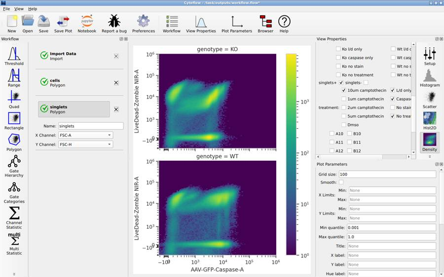
cu click 1115 293; sleep 6; cu click 1273 293; sleep 6; cu click 1273 321; sleep 15; cu screenshot /tmp/screen.png
{
"file_path": "/tmp/screen.png"
}/tmp/screen.png
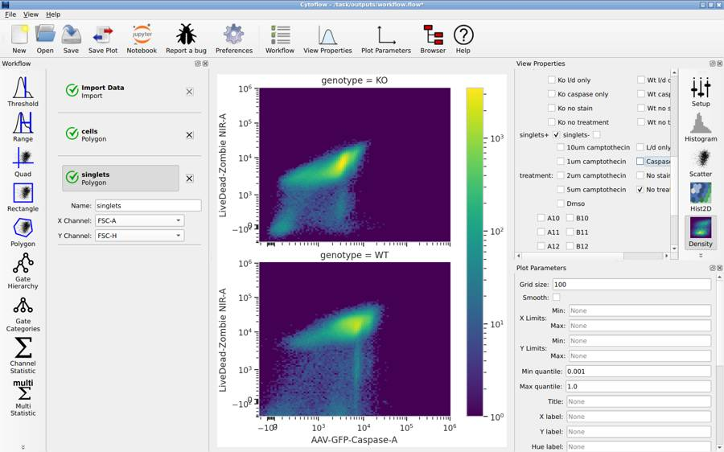
cu click 1115 293; sleep 6; cu click 1273 377; sleep 15; cu screenshot /tmp/screen.png
{
"file_path": "/tmp/screen.png"
}/tmp/screen.png
cu click 45 250; sleep 3; cu screenshot /tmp/screen.png
{
"file_path": "/tmp/screen.png"
}/tmp/screen.png
for i in $(seq 1 25); do cu click 1341 145; sleep 0.1; done; for i in $(seq 1 10); do cu click 1031 509; sleep 0.1; done; sleep 1; cu screenshot /tmp/screen.png
{
"file_path": "/tmp/screen.png"
}/tmp/screen.png
cu click 1125 202; sleep 1.2; cu click 1120 250; sleep 1; cu click 1140 236; sleep 1.2; cu click 1125 188; sleep 1; cu click 1113 682; sleep 0.5; cu click 1086 287; sleep 0.7; for i in $(seq 1 12); do cu click 1341 495; sleep 0.1; done; sleep 1; cu screenshot /tmp/screen.png
{
"file_path": "/tmp/screen.png"
}/tmp/screen.png
cu click 1106 340; sleep 0.5; cu click 1273 365; sleep 0.5; cu click 1273 421; sleep 0.5; cu click 1273 449; sleep 0.5; cu click 1115 365; sleep 0.5; cu click 288 495; cu type "live"; cu key Tab; sleep 1; cu click 265 525; sleep 1.5; cu screenshot /tmp/s1.png; cu click 265 622; sleep 20; /tmp/mem.sh; cu screenshot /tmp/screen.png
{
"file_path": "/tmp/screen.png"
}/tmp/s1.png 1556 1554 MB --multiprocessing-fork 1541 539 MB avail MB: 5472 /tmp/screen.png
cu click 288 555; cu type "-1000000"; cu key Tab; sleep 1; cu click 288 585; cu type "1000"; cu key Tab; sleep 25; /tmp/mem.sh; cu screenshot /tmp/screen.png
{
"file_path": "/tmp/screen.png"
}1556 1547 MB --multiprocessing-fork 1541 539 MB avail MB: 5496 /tmp/screen.png
cu key ctrl+s; sleep 2; cu click 45 180; sleep 3; for i in $(seq 1 25); do cu click 1341 145; sleep 0.1; done; sleep 1; cu screenshot /tmp/screen.png
{
"file_path": "/tmp/screen.png"
}/tmp/screen.png
cu click 1140 224; sleep 1.2; cu click 1130 272; sleep 1; cu click 1150 258; sleep 1.2; cu click 1140 210; sleep 1; cu click 1113 682; sleep 0.5; cu click 1086 309; sleep 0.7; cu click 1080 359; sleep 0.7; for i in $(seq 1 14); do cu click 1341 495; sleep 0.1; done; sleep 1; cu screenshot /tmp/screen.png
{
"file_path": "/tmp/screen.png"
}/tmp/screen.png
cu click 1106 342; sleep 0.5; cu click 1115 367; sleep 0.5; cu click 1273 367; sleep 0.5; cu click 1273 451; sleep 0.5; cu click 1115 479; sleep 0.5; cu click 293 581; cu type "caspase_pos"; cu key Tab; sleep 1; cu click 275 612; sleep 1.5; cu screenshot /tmp/s1.png; cu click 260 613; sleep 20; /tmp/mem.sh; cu screenshot /tmp/screen.png
{
"file_path": "/tmp/screen.png"
}/tmp/s1.png 1556 1547 MB --multiprocessing-fork 1541 539 MB avail MB: 5503 /tmp/screen.png
cu click 293 642; cu type "1000"; cu key Tab; sleep 25; /tmp/mem.sh; cu screenshot /tmp/screen.png
{
"file_path": "/tmp/screen.png"
}1556 1547 MB --multiprocessing-fork 1541 539 MB avail MB: 5507 /tmp/screen.png
cu key ctrl+s; sleep 2; cu click 45 705; sleep 3; cu screenshot /tmp/screen.png
{
"file_path": "/tmp/screen.png"
}/tmp/screen.png
cu click 288 668; cu type "count"; cu key Tab; sleep 1; cu click 265 698; sleep 1.5; cu click 230 723; sleep 1.5; cu click 253 728; sleep 1.5; cu screenshot /tmp/screen.png
{
"file_path": "/tmp/screen.png"
}/tmp/screen.png
cu click 205 577; sleep 2; cu screenshot /tmp/screen.png
{
"file_path": "/tmp/screen.png"
}/tmp/screen.png
cu click 361 842; sleep 1.5; cu click 185 785; sleep 1.5; cu click 361 785; sleep 1.5; cu click 185 842; sleep 1.5; cu click 185 757; sleep 10; /tmp/mem.sh; cu screenshot /tmp/screen.png
{
"file_path": "/tmp/screen.png"
}1556 1612 MB --multiprocessing-fork 1541 541 MB avail MB: 5270 /tmp/screen.png
cu click 1393 508; sleep 1.5; cu screenshot /tmp/screen.png
{
"file_path": "/tmp/screen.png"
}/tmp/screen.png
cu click 1405 185; sleep 4; cu screenshot /tmp/screen.png
{
"file_path": "/tmp/screen.png"
}/tmp/screen.png
cu click 1070 420; sleep 1.5; cu screenshot /tmp/screen.png
{
"file_path": "/tmp/screen.png"
}/tmp/screen.png
cu click 1142 181; sleep 1.5; cu screenshot /tmp/s1.png; cu click 1130 182; sleep 5; cu screenshot /tmp/screen.png
{
"file_path": "/tmp/screen.png"
}/tmp/s1.png /tmp/screen.png
cu click 1142 181; sleep 1.5; cu screenshot /tmp/s1.png; cu click 1130 205; sleep 6; cu screenshot /tmp/screen.png
{
"file_path": "/tmp/screen.png"
}/tmp/s1.png /tmp/screen.png
mkdir -p /tmp/exports && chmod 777 /tmp/exports; cu click 1142 211; sleep 2; cu screenshot /tmp/screen.png
{
"file_path": "/tmp/screen.png"
}/tmp/screen.png
cu click 706 567; cu paste "/tmp/exports/count.csv"; sleep 0.5; cu key Return; sleep 3; ls -la /tmp/exports; head -20 /tmp/exports/count.csv; wc -l /tmp/exports/count.csv
total 16 drwxrwxrwx 2 root root 4096 Nov 10 19:45 . drwxrwxrwx 10 root root 4096 Nov 10 19:44 .. -rw-rw-r-- 1 cfapp cfapp 5201 Nov 10 19:45 count.csv well,cells,singlets,live,caspase_pos,FSC-A A10,0,0,0,0,56176.0 A10,0,0,0,1,50708.0 A10,0,0,1,0,44726.0 A10,0,0,1,1,18276.0 A10,0,1,0,0,4313.0 A10,0,1,0,1,14739.0 A10,0,1,1,0,7918.0 A10,0,1,1,1,21508.0 A10,1,0,0,0,2474.0 A10,1,0,0,1,113698.0 A10,1,0,1,0,4341.0 A10,1,0,1,1,10492.0 A10,1,1,0,0,5198.0 A10,1,1,0,1,178146.0 A10,1,1,1,0,4448.0 A10,1,1,1,1,15429.0 A11,0,0,0,0,55560.0 A11,0,0,0,1,21155.0 A11,0,0,1,0,28268.0 278 /tmp/exports/count.csv
mkdir -p /tmp/work && cat > /tmp/work/tab.py <<'EOF'
import pandas as pd, sys
d=pd.read_csv(sys.argv[1])
d=d.rename(columns={d.columns[-1]:'n'})
lay=pd.read_csv('/task/inputs/plate_layout.csv')
rows=[]
for w,g in d.groupby('well'):
tot=g.n.sum()
c=g[g.cells==1]; s=c[c.singlets==1]; l=s[s.live==1]; p=l[l.caspase_pos==1]
sp=s[s.caspase_pos==1]
rows.append(dict(well=w,all=int(tot),cells=int(c.n.sum()),singlets=int(s.n.sum()),live=int(l.n.sum()),casp=int(p.n.sum()),casp_sing=int(sp.n.sum())))
r=pd.DataFrame(rows).merge(lay[['well','sample']],on='well')
r['%cells']=100*r.cells/r['all']; r['%sing']=100*r.singlets/r.cells; r['%live']=100*r.live/r.singlets; r['%casp_live']=100*r.casp/r.live; r['%casp_sing']=100*r.casp_sing/r.singlets
r['ord']=r.well.str[0]+r.well.str[1:].str.zfill(2)
pd.set_option('display.width',250)
print(r.sort_values('ord').drop(columns='ord').round(2).to_string(index=False))
EOF
python3 -I /tmp/work/tab.py /tmp/exports/count.csvwell all cells singlets live casp casp_sing sample %cells %sing %live %casp_live %casp_sing A2 365736 225157 138254 138252 1434 1435 WT no stain 61.56 61.40 100.00 1.04 1.04 A4 440820 271783 172484 172483 159151 159152 WT caspase only 61.65 63.46 100.00 92.27 92.27 A6 412724 254400 166539 14093 60 1827 WT L/D only 61.64 65.46 8.46 0.43 1.10 A7 395514 257152 172467 10181 7669 165756 WT 10uM camptothecin 65.02 67.07 5.90 75.33 96.11 A8 384992 247670 170766 14519 11957 165096 WT 5uM camptothecin 64.33 68.95 8.50 82.35 96.68 A9 428254 266451 174327 18207 15001 167068 WT 2uM camptothecin 62.22 65.43 10.44 82.39 95.84 A10 552590 334226 203221 19877 15429 193575 WT 1uM camptothecin 60.48 60.80 9.78 77.62 95.25 A11 377220 242414 157220 11888 6297 145268 WT DMSO 64.26 64.86 7.56 52.97 92.40 A12 409074 280894 170765 16966 10153 158042 WT no treatment 68.67 60.79 9.94 59.84 92.55 B2 392795 249957 180568 180510 7390 7422 KO no stain 63.64 72.24 99.97 4.09 4.11 B4 605670 385898 255385 255379 225000 225006 KO caspase only 63.71 66.18 100.00 88.10 88.10 B6 457465 257345 176121 9133 30 2891 KO L/D only 56.25 68.44 5.19 0.33 1.64 B7 612174 362533 232981 7391 4632 211634 KO 10uM camptothecin 59.22 64.26 3.17 62.67 90.84 B8 493435 301330 205023 4382 2681 185983 KO 5uM camptothecin 61.07 68.04 2.14 61.18 90.71 B9 425772 236750 168420 7688 3971 149656 KO 2uM camptothecin 55.60 71.14 4.56 51.65 88.86 B10 539106 315084 212491 8125 4141 192117 KO 1uM camptothecin 58.45 67.44 3.82 50.97 90.41 B11 561171 321750 209570 8480 3148 180237 KO DMSO 57.34 65.13 4.05 37.12 86.00 B12 538223 316170 205093 11862 4269 175437 KO no treatment 58.74 64.87 5.78 35.99 85.54
cu click 1393 180; sleep 3; cu screenshot /tmp/screen.png
{
"file_path": "/tmp/screen.png"
}/tmp/screen.png
cu key ctrl+s; sleep 3; ls -la /task/outputs/; cu click 1157 281; sleep 1.2; cu screenshot /tmp/s1.png; cu click 1143 233; sleep 1; cu click 1157 244; sleep 1.2; cu screenshot /tmp/screen.png
{
"file_path": "/tmp/screen.png"
}total 108 drwxrwsrwx 2 agent task 4096 Nov 10 19:28 . drwxr-xr-x 4 root root 4096 Nov 5 22:25 .. -rw-rw-r-- 1 cfapp task 102326 Nov 10 19:46 workflow.flow /tmp/s1.png /tmp/screen.png
cu click 1141 103; sleep 1; cu click 1190 181; sleep 1.5; cu screenshot /tmp/s1.png; cu click 1180 374; sleep 5; /tmp/mem.sh; sleep 15; /tmp/mem.sh; cu screenshot /tmp/screen.png
{
"file_path": "/tmp/screen.png"
}/tmp/s1.png 1556 1587 MB --multiprocessing-fork 1541 542 MB avail MB: 5339 1556 1587 MB --multiprocessing-fork 1541 542 MB avail MB: 5422 /tmp/screen.png
cu click 1157 244; sleep 1.2; cu click 1130 388; sleep 12; cu click 1158 488; sleep 20; cu screenshot /tmp/screen.png
{
"file_path": "/tmp/screen.png"
}/tmp/screen.png
cu click 1158 488; sleep 8; cu click 1110 488; sleep 22; cu screenshot /tmp/screen.png
{
"file_path": "/tmp/screen.png"
}/tmp/screen.png
cu click 1110 488; sleep 15; cu click 240 527; sleep 4; cu screenshot /tmp/screen.png
{
"file_path": "/tmp/screen.png"
}/tmp/screen.png
cu click 45 250; sleep 3; cu screenshot /tmp/screen.png
{
"file_path": "/tmp/screen.png"
}/tmp/screen.png
cu click 1158 334; sleep 0.5; cu click 280 668; cu type "acq_first_20s"; cu key Tab; sleep 1; cu click 265 698; sleep 1.5; cu screenshot /tmp/screen.png
{
"file_path": "/tmp/screen.png"
}/tmp/screen.png
cu click 200 887; sleep 12; cu click 280 728; cu type "-1"; cu key Tab; sleep 1; cu click 280 758; cu type "20000"; cu key Tab; sleep 25; /tmp/mem.sh; cu screenshot /tmp/screen.png
{
"file_path": "/tmp/screen.png"
}1556 1606 MB --multiprocessing-fork 1541 544 MB avail MB: 5384 /tmp/screen.png
cu click 240 821; sleep 3; cu click 45 705; sleep 3; cu screenshot /tmp/screen.png
{
"file_path": "/tmp/screen.png"
}/tmp/screen.png
sleep 5; cu scroll 250 620 down 15; sleep 1.5; cu screenshot /tmp/screen.png
{
"file_path": "/tmp/screen.png"
}/tmp/screen.png
cu click 288 591; cu type "count_time"; cu key Tab; sleep 1; cu click 253 651; sleep 1.5; cu screenshot /tmp/s1.png
{
"file_path": "/tmp/s1.png"
}/tmp/s1.png
cu click 205 577; sleep 2; cu click 185 680; sleep 1.5; cu click 361 765; sleep 6; cu screenshot /tmp/screen.png
{
"file_path": "/tmp/screen.png"
}/tmp/screen.png
cu click 45 705; sleep 3; cu scroll 105 300 down 15; sleep 1.5; cu screenshot /tmp/screen.png
{
"file_path": "/tmp/screen.png"
}/tmp/screen.png
cu scroll 105 300 up 5; sleep 1.5; cu screenshot /tmp/screen.png
{
"file_path": "/tmp/screen.png"
}/tmp/screen.png
cu scroll 105 300 up 1; sleep 1.5; cu screenshot /tmp/screen.png
{
"file_path": "/tmp/screen.png"
}/tmp/screen.png
cu click 288 199; cu type "casp_median"; cu key Tab; sleep 1; cu click 265 229; sleep 1.5; cu click 250 230; sleep 1.5; cu click 253 260; sleep 1.5; cu screenshot /tmp/screen.png
{
"file_path": "/tmp/screen.png"
}/tmp/screen.png
cu click 209 524; sleep 2; cu click 361 373; sleep 1.5; cu click 185 401; sleep 1.5; cu click 166 723; sleep 2; cu click 187 767; sleep 8; /tmp/mem.sh; cu screenshot /tmp/screen.png
{
"file_path": "/tmp/screen.png"
}1556 1765 MB --multiprocessing-fork 1541 547 MB avail MB: 5099 /tmp/screen.png
sleep 5; cu click 45 705; sleep 3; cu scroll 105 300 down 25; sleep 1; cu scroll 105 300 up 6; sleep 1.5; cu screenshot /tmp/screen.png
{
"file_path": "/tmp/screen.png"
}/tmp/screen.png
cu click 288 199; cu type "zombie_median"; cu key Tab; sleep 1; cu click 265 229; sleep 1.5; cu screenshot /tmp/s1.png; cu click 250 326; sleep 1.5; cu click 253 260; sleep 1.5; cu click 209 524; sleep 2; cu click 361 373; sleep 1.5; cu click 185 401; sleep 1.5; cu click 166 723; sleep 2; cu click 187 767; sleep 8; /tmp/mem.sh; cu screenshot /tmp/screen.png
{
"file_path": "/tmp/screen.png"
}/tmp/s1.png 1556 2008 MB --multiprocessing-fork 1541 549 MB avail MB: 4962 /tmp/screen.png
sleep 5; cu key ctrl+s; sleep 3; cu click 1393 508; sleep 1.5; cu click 1405 185; sleep 3; cu click 1070 420; sleep 1.5; cu click 1142 181; sleep 1.5; cu screenshot /tmp/screen.png
{
"file_path": "/tmp/screen.png"
}/tmp/screen.png
cat > /tmp/work/export.sh <<'EOF' #!/bin/bash # usage: export.sh <dropdown_item_y> <outfile> (dropdown assumed closed) cu click 1142 181; sleep 1.5; cu click 1140 $1; sleep 5 cu click 1142 211; sleep 2.5 cu click 706 567; cu paste "$2"; sleep 0.5; cu key Return; sleep 3 ls -la "$2" EOF chmod +x /tmp/work/export.sh cu key Escape; sleep 1 rm -f /tmp/exports/*.csv /tmp/work/export.sh 207 /tmp/exports/casp_median.csv /tmp/work/export.sh 231 /tmp/exports/count.csv /tmp/work/export.sh 255 /tmp/exports/count_time.csv /tmp/work/export.sh 278 /tmp/exports/zombie_median.csv head -5 /tmp/exports/*.csv; wc -l /tmp/exports/*.csv; cu screenshot /tmp/screen.png
{
"file_path": "/tmp/screen.png"
}-rw-rw-r-- 1 cfapp cfapp 465 Nov 10 19:54 /tmp/exports/casp_median.csv -rw-rw-r-- 1 cfapp cfapp 538 Nov 10 19:54 /tmp/exports/count.csv -rw-rw-r-- 1 cfapp cfapp 538 Nov 10 19:54 /tmp/exports/count_time.csv -rw-rw-r-- 1 cfapp cfapp 538 Nov 10 19:54 /tmp/exports/zombie_median.csv ==> /tmp/exports/casp_median.csv <== well,live,AAV-GFP-Caspase-A A10,0,11413.0 A10,1,2427.0 A11,0,6652.0 A11,1,1195.5 ==> /tmp/exports/count.csv <== acq_first_20s,well,Time 0,A10,299136.0 0,A11,213468.0 0,A12,406250.0 0,A2,204122.0 ==> /tmp/exports/count_time.csv <== acq_first_20s,well,Time 0,A10,299136.0 0,A11,213468.0 0,A12,406250.0 0,A2,204122.0 ==> /tmp/exports/zombie_median.csv <== acq_first_20s,well,Time 0,A10,299136.0 0,A11,213468.0 0,A12,406250.0 0,A2,204122.0 37 /tmp/exports/casp_median.csv 37 /tmp/exports/count.csv 37 /tmp/exports/count_time.csv 37 /tmp/exports/zombie_median.csv 148 total /tmp/screen.png
cu click 1142 181; sleep 1.5; cu screenshot /tmp/screen.png
{
"file_path": "/tmp/screen.png"
}/tmp/screen.png
cu click 1140 158; sleep 6; cu click 1158 211; sleep 2.5; cu click 706 567; cu paste "/tmp/exports/count.csv"; sleep 0.5; cu key Return; sleep 3; cu screenshot /tmp/s1.png cu click 1142 181; sleep 1.5; cu click 1140 229; sleep 6; cu click 1158 211; sleep 2.5; cu click 706 567; cu paste "/tmp/exports/zombie_median.csv"; sleep 0.5; cu key Return; sleep 3; cu screenshot /tmp/screen.png head -3 /tmp/exports/*.csv; wc -l /tmp/exports/*.csv
{
"file_path": "/tmp/screen.png"
}/tmp/s1.png /tmp/screen.png ==> /tmp/exports/casp_median.csv <== well,live,AAV-GFP-Caspase-A A10,0,11413.0 A10,1,2427.0 ==> /tmp/exports/count.csv <== acq_first_20s,well,Time 0,A10,299136.0 0,A11,213468.0 ==> /tmp/exports/count_time.csv <== acq_first_20s,well,Time 0,A10,299136.0 0,A11,213468.0 ==> /tmp/exports/zombie_median.csv <== acq_first_20s,well,Time 0,A10,299136.0 0,A11,213468.0 37 /tmp/exports/casp_median.csv 37 /tmp/exports/count.csv 37 /tmp/exports/count_time.csv 37 /tmp/exports/zombie_median.csv 148 total
cu click 979 567; sleep 3; cu screenshot /tmp/screen.png; head -3 /tmp/exports/count.csv; wc -l /tmp/exports/count.csv
{
"file_path": "/tmp/screen.png"
}/tmp/screen.png acq_first_20s,well,Time 0,A10,299136.0 0,A11,213468.0 37 /tmp/exports/count.csv
cu click 686 409; sleep 3; head -3 /tmp/exports/count.csv; wc -l /tmp/exports/count.csv; cu click 1142 181; sleep 1.5; cu screenshot /tmp/screen.png
{
"file_path": "/tmp/screen.png"
}well,cells,singlets,live,caspase_pos,FSC-A A10,0,0,0,0,56176.0 A10,0,0,0,1,50708.0 278 /tmp/exports/count.csv /tmp/screen.png
cu click 1140 230; sleep 6; cu click 1158 211; sleep 2.5; cu click 706 567; cu paste "/tmp/exports/zmed.csv"; sleep 0.5; cu key Return; sleep 3; rm -f /tmp/exports/zombie_median.csv; head -40 /tmp/exports/zmed.csv; echo; cat /tmp/exports/casp_median.csv; echo; cat /tmp/exports/count_time.csv
well,live,LiveDead-Zombie NIR-A A10,0,13006.0 A10,1,-34.0 A11,0,14921.0 A11,1,-22.0 A12,0,15640.0 A12,1,-155.0 A2,0,1742.5 A2,1,20.0 A4,0,13534.0 A4,1,20.0 A6,0,15722.0 A6,1,-3.0 A7,0,17393.0 A7,1,-80.0 A8,0,16275.0 A8,1,-64.0 A9,0,16474.5 A9,1,-93.0 B10,0,13129.0 B10,1,92.0 B11,0,7053.5 B11,1,209.0 B12,0,6022.0 B12,1,176.0 B2,0,13336.0 B2,1,21.0 B4,0,17947.0 B4,1,20.0 B6,0,14973.0 B6,1,27.0 B7,0,11182.0 B7,1,82.0 B8,0,13093.0 B8,1,114.0 B9,0,12771.0 B9,1,49.0 well,live,AAV-GFP-Caspase-A A10,0,11413.0 A10,1,2427.0 A11,0,6652.0 A11,1,1195.5 A12,0,5937.0 A12,1,1782.5 A2,0,973.5 A2,1,127.0 A4,0,6184.0 A4,1,5910.0 A6,0,200.0 A6,1,78.0 A7,0,10826.0 A7,1,2060.0 A8,0,14089.0 A8,1,2420.0 A9,0,11453.0 A9,1,2463.0 B10,0,5686.0 B10,1,1071.0 B11,0,2744.0 B11,1,376.0 B12,0,3020.0 B12,1,357.5 B2,0,1153.0 B2,1,247.0 B4,0,3896.5 B4,1,2859.0 B6,0,153.0 B6,1,70.0 B7,0,4731.0 B7,1,2056.0 B8,0,4525.0 B8,1,1806.5 B9,0,4673.0 B9,1,1163.0 acq_first_20s,well,Time 0,A10,299136.0 0,A11,213468.0 0,A12,406250.0 0,A2,204122.0 0,A4,251780.0 0,A6,229495.0 0,A7,222287.0 0,A8,208718.0 0,A9,238094.0 0,B10,300331.0 0,B11,308751.0 0,B12,297550.0 0,B2,224782.0 0,B4,339325.0 0,B6,259593.0 0,B7,339901.0 0,B8,267004.0 0,B9,234576.0 1,A10,253454.0 1,A11,163752.0 1,A12,2824.0 1,A2,161614.0 1,A4,189040.0 1,A6,183229.0 1,A7,173227.0 1,A8,176274.0 1,A9,190160.0 1,B10,238775.0 1,B11,252420.0 1,B12,240673.0 1,B2,168013.0 1,B4,266345.0 1,B6,197872.0 1,B7,272273.0 1,B8,226431.0 1,B9,191196.0
cu key ctrl+s; sleep 2; cu click 1393 390; sleep 3; cu click 1195 181; sleep 1.5; cu screenshot /tmp/screen.png
{
"file_path": "/tmp/screen.png"
}/tmp/screen.png
cu click 1133 374; sleep 1.5; cu click 1140 271; sleep 1.2; cu click 1130 319; sleep 1; cu click 1155 341; sleep 1.2; cu screenshot /tmp/s1.png
{
"file_path": "/tmp/s1.png"
}/tmp/s1.png
cu click 1148 294; sleep 1; cu click 1140 377; sleep 1.2; cu click 1130 401; sleep 1; for i in $(seq 1 7); do cu click 1341 495; sleep 0.1; done; sleep 1; cu screenshot /tmp/screen.png
{
"file_path": "/tmp/screen.png"
}/tmp/screen.png
cu click 1086 363; sleep 0.5; cu click 1158 388; sleep 0.5; for i in $(seq 1 10); do cu click 1341 495; sleep 0.1; done; sleep 1; cu screenshot /tmp/screen.png
{
"file_path": "/tmp/screen.png"
}/tmp/screen.png
cu click 1275 342; sleep 0.5; cu click 1275 454; sleep 0.5; for i in $(seq 1 25); do cu click 1341 145; sleep 0.1; done; sleep 1; cu click 1195 241; sleep 1.5; cu click 1180 242; sleep 20; /tmp/mem.sh; cu screenshot /tmp/screen.png
{
"file_path": "/tmp/screen.png"
}1556 1680 MB --multiprocessing-fork 1541 553 MB avail MB: 5327 /tmp/screen.png
thinking
A12's signal is stable once flow resumes around 24 s, so the anomaly is limited to the start. I'm adding one last check comparing median FSC for Zombie-negative and -positive cells to sanity-test the live gate.
cu click 45 705; sleep 3; cu scroll 105 300 down 30; sleep 1; cu scroll 105 300 up 6; sleep 1.5; cu screenshot /tmp/screen.png
{
"file_path": "/tmp/screen.png"
}/tmp/screen.png
cu click 288 199; cu type "fsc_median"; cu key Tab; sleep 1; cu click 265 229; sleep 1.5; cu screenshot /tmp/s1.png; cu click 250 254; sleep 1.5; cu click 253 260; sleep 1.5; cu click 209 524; sleep 2; cu click 361 373; sleep 1.5; cu click 185 401; sleep 1.5; cu click 166 723; sleep 2; cu click 187 767; sleep 14; /tmp/mem.sh; cu screenshot /tmp/screen.png
{
"file_path": "/tmp/screen.png"
}/tmp/s1.png 1556 1683 MB --multiprocessing-fork 1541 555 MB avail MB: 5247 /tmp/screen.png
cu click 1393 508; sleep 1.5; cu click 1405 185; sleep 3; cu click 1070 420; sleep 1.5; cu click 1142 181; sleep 1.5; cu screenshot /tmp/screen.png
{
"file_path": "/tmp/screen.png"
}/tmp/screen.png
cu click 1140 278; sleep 6; cu click 1158 211; sleep 2.5; cu click 706 567; cu paste "/tmp/exports/fsc_median.csv"; sleep 0.5; cu key Return; sleep 3; python3 -I - <<'EOF'
import pandas as pd
d=pd.read_csv('/tmp/exports/fsc_median.csv'); print(d.pivot(index='well',columns='live',values=d.columns[-1]).to_string())
EOFlive 0 1 well A10 143582.5 167403.0 A11 144362.5 189493.5 A12 144414.0 184903.5 A2 107872.0 147567.5 A4 174775.0 145755.0 A6 147223.0 169732.0 A7 144230.0 182754.0 A8 145548.0 176984.0 A9 143712.5 180139.0 B10 130809.0 169561.0 B11 127368.0 162830.5 B12 130387.0 174334.0 B2 140238.0 139669.0 B4 132840.0 133332.0 B6 131184.5 196528.0 B7 128753.5 172163.0 B8 133284.0 159811.5 B9 129285.5 187964.5
cu key ctrl+s; sleep 4; cu screenshot /tmp/screen.png; ls -la /task/outputs; cd /task/outputs; grep -n -E "^ operation:|^ name:|^ channel:|^ xchannel:|^ ychannel:|^ low:|^ high:|^ threshold:|^ function|^ by:|events:|^ xscale|^ yscale" workflow.flow | head -80; grep -n -A14 "vertices:" workflow.flow | grep -v tuple | head -60
{
"file_path": "/tmp/screen.png"
}/tmp/screen.png total 312 drwxrwsrwx 2 agent task 4096 Nov 10 19:28 . drwxr-xr-x 4 root root 4096 Nov 5 22:25 .. -rw-rw-r-- 1 cfapp task 309719 Nov 10 20:02 workflow.flow 255: operation: !import;4 262: events: null 938: operation: *id001 1345: xchannel: AAV-GFP-Caspase-A 1347: xscale: logicle 1348: ychannel: LiveDead-Zombie NIR-A 1350: yscale: logicle 1484: operation: &id004 !polygon;1 1485: name: singlets 1502: xchannel: FSC-A 1503: xscale: linear 1504: ychannel: FSC-H 1505: yscale: linear 1758: channel: AAV-GFP-Caspase-A 2285: operation: *id007 2879: operation: *id009 3488: operation: *id011 3825: channel: Time 4109: operation: !channel-statistic;2 4110: by: 4116: channel: FSC-A 4117: function_name: Count 4118: name: count 6344: operation: !channel-statistic;2 6345: by: 6348: channel: Time 6349: function_name: Count 6350: name: count_time 8671: operation: !channel-statistic;2 8672: by: 8675: channel: AAV-GFP-Caspase-A 8676: function_name: Median 8677: name: casp_median 11244: xchannel: Time 11246: xscale: linear 11247: ychannel: AAV-GFP-Caspase-A 11249: yscale: logicle 11271: operation: !channel-statistic;2 11272: by: 11275: channel: LiveDead-Zombie NIR-A 11276: function_name: Median 11277: name: zombie_median 14095: operation: !channel-statistic;2 14096: by: 14099: channel: FSC-A 14100: function_name: Median 14101: name: fsc_median 690: vertices: 692- - 95299.72234403258 693- - 45227.05799439169 695- - 64426.18584212682 696- - 89758.2120893345 698- - 64426.18584212682 699- - 297856.4025670722 701- - 150208.0314985869 702- - 944834.512815768 704- - 898075.9770927915 -- 1486: vertices: 1488- - 60419.13383589612 1489- - 52047.85293032692 1491- - 60419.13383589612 1492- - 78011.45389754318 1494- - 341324.18887886056 1495- - 390151.6344145211 1497- - 460672.4506069594 1498- - 390151.6344145211 1500- - 460672.4506069594
cd /task/outputs; grep -n -E "!polygon|!range|!threshold|!import|!channel-statistic" workflow.flow | head -30; for pat in '&id[0-9]* !polygon' '!range' '!threshold'; do grep -n -A8 -E "operation: .*$pat" workflow.flow | grep -v -E "tuple|^--$" | head -40; done; grep -n -B2 -A12 "name: cells" workflow.flow | head -60
255: operation: !import;4 684: current_view: &id002 !polygon-view;3 688: op: &id001 !polygon;1 719: plot_params: !polygon-params;1 1484: operation: &id004 !polygon;1 1654: - !polygon-view;3 1659: plot_params: !polygon-params;1 2033: current_view: &id008 !range-view;2 2036: op: &id007 !range;1 2610: current_view: &id010 !threshold-view;2 2613: op: &id009 !threshold;1 3215: current_view: &id012 !range-view;2 3218: op: &id011 !range;1 4109: operation: !channel-statistic;2 6344: operation: !channel-statistic;2 8671: operation: !channel-statistic;2 11271: operation: !channel-statistic;2 14095: operation: !channel-statistic;2 1484: operation: &id004 !polygon;1 1485- name: singlets 1486- vertices: 1488- - 60419.13383589612 1489- - 52047.85293032692 1491- - 60419.13383589612 1492- - 78011.45389754318 687- huescale: log 688- op: &id001 !polygon;1 689: name: cells 690- vertices: 691- - !!python/tuple 692- - 95299.72234403258 693- - 45227.05799439169 694- - !!python/tuple 695- - 64426.18584212682 696- - 89758.2120893345 697- - !!python/tuple 698- - 64426.18584212682 699- - 297856.4025670722 700- - !!python/tuple 701- - 150208.0314985869 -- 1270- subset_list: 1271- - !bool-subset;1 1272: name: cells 1273- selected_f: false 1274- selected_t: true 1275- values: [] 1276- - !category-subset;1 1277- name: genotype 1278- selected: [] 1279- values: 1280- - KO 1281- - WT 1282- - !category-subset;1 1283- name: sample 1284- selected: [] -- 1686- subset_list: 1687- - !bool-subset;1 1688: name: cells 1689- selected_f: false 1690- selected_t: true 1691- values: [] 1692- - !category-subset;1 1693- name: genotype 1694- selected: [] 1695- values: 1696- - KO 1697- - WT 1698- - !category-subset;1 1699- name: sample 1700- selected: [] -- 1791- subset_list: 1792- - !bool-subset;1 1793: name: cells 1794- selected_f: false 1795- selected_t: true 1796- values: [] 1797- - !category-subset;1 1798- name: genotype 1799- selected: [] 1800- values: 1801- - KO 1802- - WT
cd /task/outputs; sed -n 688,720p workflow.flow | grep -v tuple; sed -n 1484,1506p workflow.flow | grep -v tuple; sed -n 2036,2045p workflow.flow; sed -n 2613,2620p workflow.flow; sed -n 3218,3226p workflow.flow; sed -n 4109,4122p workflow.flow
op: &id001 !polygon;1
name: cells
vertices:
- 95299.72234403258
- 45227.05799439169
- 64426.18584212682
- 89758.2120893345
- 64426.18584212682
- 297856.4025670722
- 150208.0314985869
- 944834.512815768
- 898075.9770927915
- 944834.512815768
- 898075.9770927915
- 297856.4025670722
- 249615.52601153924
- 59816.19075195837
- 249615.52601153924
- 59816.19075195837
xchannel: FSC-A
xscale: log
ychannel: SSC-A
yscale: log
plot_params: !polygon-params;1
alpha: 0.25
operation: &id004 !polygon;1
name: singlets
vertices:
- 60419.13383589612
- 52047.85293032692
- 60419.13383589612
- 78011.45389754318
- 341324.18887886056
- 390151.6344145211
- 460672.4506069594
- 390151.6344145211
- 460672.4506069594
- 300144.484394838
xchannel: FSC-A
xscale: linear
ychannel: FSC-H
yscale: linear
statistics:
op: &id007 !range;1
channel: LiveDead-Zombie NIR-A
high: 1000.0
low: -1000000.0
name: live
plot_params: !histogram-params;4
alpha: 0.5
col_wrap: null
density: true
despine: true
op: &id009 !threshold;1
channel: AAV-GFP-Caspase-A
name: caspase_pos
threshold: 1000.0
plot_params: !histogram-params;4
alpha: 0.5
col_wrap: null
density: true
op: &id011 !range;1
channel: Time
high: 20000.0
low: -1.0
name: acq_first_20s
plot_params: !histogram-params;4
alpha: 0.5
col_wrap: null
density: false
operation: !channel-statistic;2
by:
- well
- cells
- singlets
- live
- caspase_pos
channel: FSC-A
function_name: Count
name: count
subset_list:
- !bool-subset;1
name: acq_first_20s
selected_f: false{
"skill": "dataviz"
}Launching skill: dataviz
cd /tmp/claude-0/bundled-skills/2.1.322/efedc2313c758c5fa9db3f42071879ce/dataviz; grep -n -i -E "categorical|#[0-9a-fA-F]{6}" references/palette.md | head -40; which node18: --surface-1: #fcfcfb; /* chart surface */ 19: --text-primary: #0b0b0b; 20: --text-secondary: #52514e; 21: --series-1: #2a78d6; /* categorical slot 1 */ 27: --surface-1: #1a1a19; 28: --text-primary: #f0efec; 29: --text-secondary: #c3c2b7; 30: --series-1: #3987e5; 35: --surface-1: #1a1a19; 36: --text-primary: #f0efec; 37: --text-secondary: #c3c2b7; 38: --series-1: #3987e5; 47:## Categorical palette 54:| 1 | blue | `#2a78d6` | `#3987e5` | 55:| 2 | orange | `#eb6834` | `#d95926` | 56:| 3 | aqua | `#1baf7a` | `#199e70` | 57:| 4 | yellow | `#eda100` | `#c98500` | 58:| 5 | magenta | `#e87ba4` | `#d55181` | 59:| 6 | green | `#008300` | `#008300` | 60:| 7 | violet | `#6250d6` | `#9085e9` | 61:| 8 | red | `#e34948` | `#e66767` | 86:pure re-order. Light slot 7 has since been lightened, `#4a3aa7` -> `#6250d6` 103:once, the second takes the next categorical slot's hue (orange), each as its own 108:| 100 | `#cde2fb` | 250 | `#86b6ef` | 400 | `#3987e5` | 550 | `#1c5cab` | 109:| 150 | `#b7d3f6` | 300 | `#6da7ec` | 450 | `#2a78d6` | 600 | `#184f95` | 110:| 200 | `#9ec5f4` | 350 | `#5598e7` | 500 | `#256abf` | 650 | `#104281` | 111:| | | | | | | 700 | `#0d366b` | 117:must still clear 2:1: on light, start no lighter than **step 250** (`#86b6ef`, 118:2.06:1); on dark, go no darker than **step 600** (`#184f95`, 2.15:1). 123:(light `#f0efec`, dark `#383835`). Equal step count per arm. (blue<->aqua was 130:| good | `#0ca30c` | 3.27 | 5.19 | 131:| warning | `#fab219` | 1.79 | 9.49 | 132:| serious | `#ec835a` | 2.57 | 6.60 | 133:| critical | `#d03b3b` | 4.68 | 3.62 | 135:Dark: same four steps - all clear 3:1 on the dark surface (`#1a1a19`) and remain 136:distinct from the dark categorical slots. On the light surface, warning and 139:from the categorical slots so a status color never impersonates a series - 142:(unsimulated Delta E >= 15), around nine categorical-vs-status pairs per mode sit 145:green `#006300` sits 10.1 from the series green; green vs status-good (9.7) 160:- Light chart surface: `#fcfcfb` /usr/bin/node Shell cwd was reset to /task
cd /tmp/claude-0/bundled-skills/2.1.322/efedc2313c758c5fa9db3f42071879ce/dataviz; node scripts/validate_palette.js "#2a78d6,#eb6834" --mode light 2>&1 | tail -15
/tmp/claude-0/bundled-skills/2.1.322/efedc2313c758c5fa9db3f42071879ce/dataviz/scripts/validate_palette.js:86
export const contrast = (a, b) => { const [hi, lo] = [relLum(a), relLum(b)].sort((x, y) => y - x); return (hi + 0.05) / (lo + 0.05); };
^^^^^^
SyntaxError: Unexpected token 'export'
at internalCompileFunction (node:internal/vm:73:18)
at wrapSafe (node:internal/modules/cjs/loader:1274:20)
at Module._compile (node:internal/modules/cjs/loader:1320:27)
at Module._extensions..js (node:internal/modules/cjs/loader:1414:10)
at Module.load (node:internal/modules/cjs/loader:1197:32)
at Module._load (node:internal/modules/cjs/loader:1013:12)
at Function.executeUserEntryPoint [as runMain] (node:internal/modules/run_main:128:12)
at node:internal/main/run_main_module:28:49
Node.js v18.19.1
Shell cwd was reset to /taskmkdir -p /tmp/work/val && cp /tmp/claude-0/bundled-skills/2.1.322/efedc2313c758c5fa9db3f42071879ce/dataviz/scripts/validate_palette.js /tmp/work/val/validate_palette.mjs && node /tmp/work/val/validate_palette.mjs "#2a78d6,#eb6834" --mode light 2>&1 | tail -15
(Bash completed with no output)
cd /tmp/work/val; node validate_palette.mjs "#2a78d6,#eb6834" --mode light; echo "exit=$?"; grep -n -E "process.argv|import.meta|console.(log|table)" validate_palette.mjs | head -20
exit=0
29: * -> logs a console.table of the report and console.warn on any FAIL.
277: console.log(`\nPalette (${mode}, surface ${surface}, ${kind}): ${n} slots`);
279: console.log(` [${(GLYPH[state] ?? state).padEnd(4)}] ${name.padEnd(22)} ${detail}`);
282: console.log(`\n \u2192 ${ok ? "ALL CHECKS PASS" : "FAILED \u2014 fix the marked checks"}`
285: console.log(`\n \u2192 ${ok ? "ALL CHECKS PASS" : "FAILED \u2014 fix the marked checks"}`
287: console.log(" scope: categorical palettes only. For a lone status/text color check"
293:if (typeof process !== "undefined" && process.argv && process.argv[1] && process.argv[1].endsWith("validate_palette.js")) {
294: const args = process.argv.slice(2);
349: console.table(result.report.map(([name, state, detail]) => ({ check: name, result: GLYPH[state] ?? state, detail })));
Shell cwd was reset to /taskmkdir -p /tmp/work/val2 && cd /tmp/work/val2 && cp ../val/validate_palette.mjs validate_palette.js && echo '{"type":"module"}' > package.json && node validate_palette.js "#2a78d6,#eb6834" --mode lightPalette (light, surface #fcfcfb, categorical): 2 slots [PASS] Lightness band all 2 inside L 0.43–0.77 [PASS] Chroma floor all 2 >= 0.1 [PASS] CVD separation worst adjacent #eb6834↔#2a78d6 ΔE 24.7 (protan) · tritan 32.7 [PASS] Normal-vision floor worst adjacent #eb6834↔#2a78d6 ΔE 33.6 (normal) [PASS] Contrast vs surface all 2 >= 3:1 → ALL CHECKS PASS (CVD in the 6–8 floor band is legal ONLY with secondary encoding: direct labels, gaps, or texture) scope: categorical palettes only. For a lone status/text color check text contrast with this script's apca() or contrast(); for a sequential ramp, lightness monotonicity. Shell cwd was reset to /task
mkdir -p /tmp/work && cat > /tmp/work/build.py <<'EOF'
import pandas as pd, numpy as np, json
OUT='/task/outputs/'
lay=pd.read_csv('/task/inputs/plate_layout.csv')
d=pd.read_csv('/tmp/exports/count.csv'); d=d.rename(columns={d.columns[-1]:'n'})
t=pd.read_csv('/tmp/exports/count_time.csv'); t=t.rename(columns={t.columns[-1]:'n'})
cm=pd.read_csv('/tmp/exports/casp_median.csv'); cm=cm.rename(columns={cm.columns[-1]:'v'})
zm=pd.read_csv('/tmp/exports/zmed.csv'); zm=zm.rename(columns={zm.columns[-1]:'v'})
# ---------- counts ----------
rows=[]; W={}
for _,r in lay.iterrows():
w=r.well; g=d[d.well==w]
tot=int(round(g.n.sum()))
c=g[g.cells==1]; s=c[c.singlets==1]; l=s[s.live==1]; p=l[l.caspase_pos==1]
nc,ns,nl,npos=[int(round(x.n.sum())) for x in (c,s,l,p)]
tt=t[t.well==w]
nt=int(round(tt[tt.acq_first_20s==1].n.sum()))
assert int(round(tt.n.sum()))==tot
sp=int(round(s[s.caspase_pos==1].n.sum()))
W[w]=dict(file=r.file,sample=r['sample'],genotype=r.genotype,treatment=r.treatment,all=tot,cells=nc,singlets=ns,live=nl,casp=npos,first20=nt,casp_singlets=sp)
for pop,role,parent,n,pn in [('all_events','other','none',tot,None),('cells','cells','all_events',nc,tot),
('singlets','singlets','cells',ns,nc),('live','live','singlets',nl,ns),
('caspase_pos','marker_positive','live',npos,nl),('acq_first_20s','other','all_events',nt,tot)]:
rows.append(dict(file=r.file,well=w,population=pop,role=role,parent=parent,count=n,
pct_of_parent='' if pn is None else round(100*n/pn,4)))
pd.DataFrame(rows).to_csv(OUT+'counts.csv',index=False)
S=pd.DataFrame(W).T
for k in ['all','cells','singlets','live','casp','first20','casp_singlets']: S[k]=S[k].astype(int)
S['pct_cells']=100*S.cells/S['all']; S['pct_singlets']=100*S.singlets/S.cells
S['viab']=100*S.live/S.singlets; S['casp_live']=100*S.casp/S.live
S['casp_sing']=100*S.casp_singlets/S.singlets; S['first20_pct']=100*S.first20/S['all']
S['casp_med_live']=[cm[(cm.well==w)&(cm.live==1)].v.iloc[0] for w in S.index]
S['casp_med_dead']=[cm[(cm.well==w)&(cm.live==0)].v.iloc[0] for w in S.index]
S['zom_med_dead']=[zm[(zm.well==w)&(zm.live==0)].v.iloc[0] for w in S.index]
S.to_csv('/tmp/work/per_well.csv')
pd.set_option('display.width',250)
print(S[['sample','all','cells','singlets','live','casp','pct_cells','pct_singlets','viab','casp_live','casp_sing','first20_pct']].round(2).to_string())
# ---------- flags ----------
others=S.drop('A12').first20_pct
fl=[]
for w,r in S.iterrows():
base=f"{r['all']} events; {r.first20_pct:.1f}% of events in first 20 s of acquisition; live (Zombie NIR-negative) = {r.live} cells"
if w=='A12':
fl.append((r.file,w,'clog',
f"Flow interrupted at start of acquisition: only {r.first20} of {r['all']} events ({r.first20_pct:.2f}%) were recorded in the first 20 s (Time < 20000 ms, gate acq_first_20s) versus {others.min():.1f}-{others.max():.1f}% in the other 17 wells; event rate then surged to ~{(r['all']-r.first20)/28/1000:.1f}k events/s for the remaining ~28 s (other wells ~{S.drop('A12')['all'].div(47.5).median()/1000:.1f}k/s). After flow resumed the caspase and Zombie signals were stable over time and the well still gave {r.live} live cells; pct caspase_pos of live = {r.casp_live:.1f}% vs {S.loc['A11'].casp_live:.1f}% in the WT DMSO well.",
'keep_with_note'))
elif w=='B2':
fl.append((r.file,w,'bad_control',
f"Unstained KO control is not a clean caspase-channel negative: BL1 median of live singlets = {r.casp_med_live:.0f} vs {S.loc['B6'].casp_med_live:.0f} in KO L/D-only (B6) and {S.loc['A2'].casp_med_live:.0f} in WT no stain (A2); {r.casp_sing:.2f}% of singlets are above the caspase_pos threshold (1000) vs {S.loc['A2'].casp_sing:.2f}% (A2), {S.loc['A6'].casp_sing:.2f}% (A6), {S.loc['B6'].casp_sing:.2f}% (B6). Zombie channel is clean ({100-r.viab:.2f}% above the live cut-off). Not used to set gates (L/D-only wells A6/B6 were used as the caspase-negative reference).",
'keep_with_note'))
else:
fl.append((r.file,w,'none',base,'keep'))
F=pd.DataFrame(fl,columns=['file','well','issue_type','evidence','decision'])
F.to_csv(OUT+'flags.csv',index=False)
# ---------- condition summary ----------
M='100 * caspase_pos / live'
V='100 * live / singlets'
def row(name,wells,vals,mdef,norm='none'):
vals=np.array(vals,float)
return dict(condition=name,wells=';'.join(wells),n_wells_used=len(wells),mean=round(vals.mean(),3),
sd='' if len(vals)==1 else round(vals.std(ddof=1),3),metric_definition=mdef,normalisation_applied=norm)
cs=[]
tr=[('no_treatment','12'),('DMSO','11'),('camptothecin_1uM','10'),('camptothecin_2uM','9'),('camptothecin_5uM','8'),('camptothecin_10uM','7')]
for g,rw in (('WT','A'),('KO','B')):
for nm,col in tr:
w=rw+col; cs.append(row(f'{g}_{nm}',[w],[S.loc[w].casp_live],M))
wl=[rw+c for c in ('7','8','9','10')]
cs.append(row(f'{g}_camptothecin_1-10uM_pooled',wl,S.loc[wl].casp_live,M))
wl2=[rw+'11',rw+'12']
cs.append(row(f'{g}_untreated_pooled_DMSO+no_treatment',wl2,S.loc[wl2].casp_live,M))
cs.append(row(f'{g}_camptothecin_1-10uM_fold_over_DMSO',wl,S.loc[wl].casp_live/S.loc[rw+'11'].casp_live,M,
f'(100 * caspase_pos / live of well) / (100 * caspase_pos / live of {g} DMSO well {rw}11)'))
cs.append(row(f'{g}_control_LD_only',[rw+'6'],[S.loc[rw+'6'].casp_live],M))
cs.append(row(f'{g}_control_caspase_only',[rw+'4'],[S.loc[rw+'4'].casp_live],M))
cs.append(row(f'{g}_control_no_stain',[rw+'2'],[S.loc[rw+'2'].casp_live],M))
wl3=[rw+c for c in ('6','7','8','9','10','11','12')]
cs.append(row(f'{g}_viability_all_Zombie-stained_wells',wl3,S.loc[wl3].viab,V))
C=pd.DataFrame(cs); C.to_csv(OUT+'condition_summary.csv',index=False)
print(C.to_string())
print(F[F.issue_type!='none'].to_string())
EOF
python3 -I /tmp/work/build.py sample all cells singlets live casp pct_cells pct_singlets viab casp_live casp_sing first20_pct
A2 WT no stain 365736 225157 138254 138252 1434 61.56 61.40 100.00 1.04 1.04 44.19
A4 WT caspase only 440820 271783 172484 172483 159151 61.65 63.46 100.00 92.27 92.27 42.88
A6 WT L/D only 412724 254400 166539 14093 60 61.64 65.46 8.46 0.43 1.10 44.40
A7 WT 10uM camptothecin 395514 257152 172467 10181 7669 65.02 67.07 5.90 75.33 96.11 43.80
A8 WT 5uM camptothecin 384992 247670 170766 14519 11957 64.33 68.95 8.50 82.35 96.68 45.79
A9 WT 2uM camptothecin 428254 266451 174327 18207 15001 62.22 65.43 10.44 82.39 95.84 44.40
A10 WT 1uM camptothecin 552590 334226 203221 19877 15429 60.48 60.80 9.78 77.62 95.25 45.87
A11 WT DMSO 377220 242414 157220 11888 6297 64.26 64.86 7.56 52.97 92.40 43.41
A12 WT no treatment 409074 280894 170765 16966 10153 68.67 60.79 9.94 59.84 92.55 0.69
B2 KO no stain 392795 249957 180568 180510 7390 63.64 72.24 99.97 4.09 4.11 42.77
B4 KO caspase only 605670 385898 255385 255379 225000 63.71 66.18 100.00 88.10 88.10 43.98
B6 KO L/D only 457465 257345 176121 9133 30 56.25 68.44 5.19 0.33 1.64 43.25
B7 KO 10uM camptothecin 612174 362533 232981 7391 4632 59.22 64.26 3.17 62.67 90.84 44.48
B8 KO 5uM camptothecin 493435 301330 205023 4382 2681 61.07 68.04 2.14 61.18 90.71 45.89
B9 KO 2uM camptothecin 425772 236750 168420 7688 3971 55.60 71.14 4.56 51.65 88.86 44.91
B10 KO 1uM camptothecin 539106 315084 212491 8125 4141 58.45 67.44 3.82 50.97 90.41 44.29
B11 KO DMSO 561171 321750 209570 8480 3148 57.34 65.13 4.05 37.12 86.00 44.98
B12 KO no treatment 538223 316170 205093 11862 4269 58.74 64.87 5.78 35.99 85.54 44.72
condition wells n_wells_used mean sd metric_definition normalisation_applied
0 WT_no_treatment A12 1 59.843 100 * caspase_pos / live none
1 WT_DMSO A11 1 52.969 100 * caspase_pos / live none
2 WT_camptothecin_1uM A10 1 77.622 100 * caspase_pos / live none
3 WT_camptothecin_2uM A9 1 82.391 100 * caspase_pos / live none
4 WT_camptothecin_5uM A8 1 82.354 100 * caspase_pos / live none
5 WT_camptothecin_10uM A7 1 75.327 100 * caspase_pos / live none
6 WT_camptothecin_1-10uM_pooled A7;A8;A9;A10 4 79.424 3.532 100 * caspase_pos / live none
7 WT_untreated_pooled_DMSO+no_treatment A11;A12 2 56.406 4.861 100 * caspase_pos / live none
8 WT_camptothecin_1-10uM_fold_over_DMSO A7;A8;A9;A10 4 1.499 0.067 100 * caspase_pos / live (100 * caspase_pos / live of well) / (100 * caspase_pos / live of WT DMSO well A11)
9 WT_control_LD_only A6 1 0.426 100 * caspase_pos / live none
10 WT_control_caspase_only A4 1 92.271 100 * caspase_pos / live none
11 WT_control_no_stain A2 1 1.037 100 * caspase_pos / live none
12 WT_viability_all_Zombie-stained_wells A6;A7;A8;A9;A10;A11;A12 7 8.656 1.578 100 * live / singlets none
13 KO_no_treatment B12 1 35.989 100 * caspase_pos / live none
14 KO_DMSO B11 1 37.123 100 * caspase_pos / live none
15 KO_camptothecin_1uM B10 1 50.966 100 * c
… [3,792 more characters not shown]cd /tmp/work && sed -i 's/After flow resumed the caspase and Zombie signals were stable over time/After flow resumed (~24 s) the caspase signal was stable over time (Time vs caspase density plot)/' build.py && python3 -I build.py > /dev/null && grep -c . /task/outputs/counts.csv /task/outputs/flags.csv /task/outputs/condition_summary.csv && grep A12 /task/outputs/flags.csv | cut -c1-400
cat > /tmp/work/fig.py <<'EOF'
import pandas as pd, numpy as np, matplotlib
matplotlib.use('Agg')
import matplotlib.pyplot as plt
S=pd.read_csv('/tmp/work/per_well.csv',index_col=0)
BLUE,ORANGE='#2a78d6','#eb6834'; INK='#0b0b0b'; INK2='#52514e'; SURF='#fcfcfb'; GRID='#e4e3df'
plt.rcParams.update({'font.family':'DejaVu Sans','font.size':10.5,'axes.edgecolor':'#b9b8b2','axes.labelcolor':INK2,
'xtick.color':INK2,'ytick.color':INK2,'text.color':INK,'figure.facecolor':SURF,'axes.facecolor':SURF,'savefig.facecolor':SURF})
cols=['12','11','10','9','8','7']; xl=['No\ntreatment','DMSO\nvehicle','1 µM','2 µM','5 µM','10 µM']
x=np.array([0,1.3,2.3,3.3,4.3,5.3])
fig,axs=plt.subplots(1,2,figsize=(12.6,5.4),gridspec_kw={'width_ratios':[1.25,1],'wspace':0.24})
def panel(ax,key,title,ylab,ymax,fmt):
for g,rw,c,mk in (('WT','A',BLUE,'o'),('PGRN-KO','B',ORANGE,'s')):
y=np.array([S.loc[rw+k,key] for k in cols])
ax.plot(x[1:],y[1:],color=c,lw=2,zorder=2)
for i,(xi,yi) in enumerate(zip(x,y)):
flagged=(rw+cols[i]=='A12')
ax.plot(xi,yi,marker=mk,ms=9,color=c,mfc=SURF if flagged else c,mew=2,mec=c,zorder=3,
label=g if i==1 else None,ls='none')
ax.annotate(g,(x[-1],y[-1]),xytext=(10,0),textcoords='offset points',va='center',ha='left',fontsize=10.5,color=INK,fontweight='bold')
for i in (0,1,5):
off=11 if g=='WT' else -15
ax.annotate(fmt.format(y[i]),(x[i],y[i]),xytext=(0,off),textcoords='offset points',ha='center',fontsize=9.5,color=INK2)
ax.set_xticks(x); ax.set_xticklabels(xl); ax.set_ylim(0,ymax); ax.set_xlim(-0.6,6.45)
ax.set_ylabel(ylab); ax.set_title(title,loc='left',fontsize=11.5,color=INK,pad=10)
ax.grid(axis='y',color=GRID,lw=0.8); ax.set_axisbelow(True)
for s in ('top','right'): ax.spines[s].set_visible(False)
ax.tick_params(length=0)
ax.annotate('',xy=(x[2]-0.25,-0.19),xytext=(x[5]+0.25,-0.19),xycoords=('data','axes fraction'),textcoords=('data','axes fraction'),
arrowprops=dict(arrowstyle='-',color='#b9b8b2',lw=1))
ax.text((x[2]+x[5])/2,-0.245,'camptothecin, 4.5 h',transform=ax.get_xaxis_transform(),ha='center',va='top',fontsize=9.5,color=INK2)
panel(axs[0],'casp_live','Caspase-3/7-positive cells among live (Zombie NIR-negative) singlets','% caspase_pos of live',100,'{:.0f}%')
panel(axs[1],'viab','Viability: Zombie NIR-negative cells among singlets','% live of singlets',20,'{:.1f}%')
axs[0].legend(loc='lower right',frameon=False,fontsize=10,handletextpad=0.3)
axs[0].annotate('open marker: A12, flow\ninterrupted at start (kept, noted)',(x[0],S.loc['A12','casp_live']),xytext=(-22,38),
textcoords='offset points',fontsize=8.8,color=INK2,ha='left',arrowprops=dict(arrowstyle='-',color='#b9b8b2',lw=0.8))
fig.suptitle('PGRN-KO neurons show a lower, not higher, caspase-3/7-positive fraction than WT; fewer than 11% of cells are viable in every well',
x=0.065,ha='left',fontsize=12.5,fontweight='bold',y=0.985)
fig.text(0.065,0.915,'Plate acquired 09-Mar-2023 · one well per condition (n = 1) · gates: cells → singlets → live (Zombie NIR < 1000) → caspase_pos (BL1 ≥ 1000)',
fontsize=9.5,color=INK2,ha='left')
fig.subplots_adjust(left=0.065,right=0.965,top=0.80,bottom=0.21)
fig.savefig('/task/outputs/figure.png',dpi=170)
EOF
python3 -I /tmp/work/fig.py && ls -la /task/outputs/task/outputs/condition_summary.csv:27 /task/outputs/flags.csv:19 /task/outputs/counts.csv:109 Caspase_WT_KO_optimization_caspase_Group_A12.fcs,A12,clog,"Flow interrupted at start of acquisition: only 2824 of 409074 events (0.69%) were recorded in the first 20 s (Time < 20000 ms, gate acq_first_20s) versus 42.8-45.9% in the other 17 wells; event rate then surged to ~14.5k events/s for the remaining ~28 s (other wells ~9.3k/s). After flow resumed (~24 s) the caspase signal was stable over ti total 528 drwxrwsrwx 2 agent task 4096 Nov 10 20:05 . drwxr-xr-x 4 root root 4096 Nov 5 22:25 .. -rw-r--r-- 1 root task 2101 Nov 10 20:05 condition_summary.csv -rw-r--r-- 1 root task 9782 Nov 10 20:05 counts.csv -rw-r--r-- 1 root task 200453 Nov 10 20:05 figure.png -rw-r--r-- 1 root task 3685 Nov 10 20:05 flags.csv -rw-rw-r-- 1 cfapp task 309719 Nov 10 20:02 workflow.flow Shell cwd was reset to /task
{
"file_path": "/task/outputs/figure.png"
}cd /tmp/work && python3 -I - <<'EOF'
s=open('fig.py').read()
s=s.replace("'PGRN-KO neurons show a lower, not higher, caspase-3/7-positive fraction than WT; fewer than 11% of cells are viable in every well'",
"'PGRN-KO neurons show a lower, not higher, caspase-3/7-positive fraction than WT.\\nFewer than 11% of cells are viable in every stained well.'")
s=s.replace("fontsize=12.5,fontweight='bold',y=0.985)","fontsize=12.5,fontweight='bold',y=0.99,va='top',linespacing=1.35)")
s=s.replace("fig.text(0.065,0.915,","fig.text(0.065,0.875,")
s=s.replace("top=0.80,bottom=0.21","top=0.77,bottom=0.21")
s=s.replace("figsize=(12.6,5.4)","figsize=(12.6,5.8)")
s=s.replace("axs[0].legend(","axs[1].set_yticks([0,5,10,15,20])\naxs[0].legend(")
open('fig.py','w').write(s)
EOF
python3 -I fig.py{
"file_path": "/task/outputs/figure.png"
}Shell cwd was reset to /task
cat > /tmp/work/report.py <<'EOF'
import pandas as pd, json
S=pd.read_csv('/tmp/work/per_well.csv',index_col=0)
C=pd.read_csv('/task/outputs/condition_summary.csv').set_index('condition')
order=['A2','A4','A6','A7','A8','A9','A10','A11','A12','B2','B4','B6','B7','B8','B9','B10','B11','B12']
tab="| Well | Sample | All events | cells | singlets | live | caspase_pos | % live of singlets | % caspase_pos of live | % caspase+ of all singlets |\n|---|---|---:|---:|---:|---:|---:|---:|---:|---:|\n"
for w in order:
r=S.loc[w]
tab+=f"| {w} | {r['sample']} | {r['all']:,} | {r.cells:,} | {r.singlets:,} | {r.live:,} | {r.casp:,} | {r.viab:.2f} | {r.casp_live:.2f} | {r.casp_sing:.2f} |\n"
g=lambda c: C.loc[c,'mean']
sd=lambda c: C.loc[c,'sd']
Q="Is there a difference in caspase-3/7 activity between PGRN-KO and WT (PGP1) iPSC-derived neurons, at baseline and after 4.5 h camptothecin (1-10 uM), and is the CellEvent Caspase-3/7 / Zombie NIR flow assay working well enough to be used for the AAV-PGRN rescue experiments?"
rep=f"""# Caspase-3/7 assay in WT vs PGRN-KO iPSC-derived neurons (EXP23000279, plate acquired 09-Mar-2023)
## Question
{Q}
The plan frames this run as assay optimisation: the hypothesis is that PGRN loss increases caspase activity, and camptothecin is included as an apoptosis inducer.
## Methods
- **Data.** 18 FCS files (Attune NxT), 365,736-612,174 events per well, 8,392,735 in total. All events were used (no down-sampling).
- **Software.** All gating and statistics were done in Cytoflow 1.3.2 (`workflow.flow`). Tables exported from Cytoflow were only tabulated and plotted in Python.
- **Channel names.** The on-screen labels are a stale template. `AAV-GFP-Caspase-A` is BL1-A and here carries CellEvent Caspase-3/7 Green (there is no AAV-GFP in this run). `LiveDead-Zombie NIR-A` is RL3-A.
- **Colour correction.** None applied, because the single-stain controls show no spillover:
- caspase-only wells (A4, B4): Zombie-channel median 20 in both, identical to the unstained wells (20-21), and ≤6 of ≥172,484 singlets above the live cut-off;
- L/D-only wells (A6, B6): {S.loc['A6'].casp_sing:.2f}% and {S.loc['B6'].casp_sing:.2f}% of singlets above the caspase threshold, versus {S.loc['A2'].casp_sing:.2f}% in unstained WT (A2).
- **Gates** (applied identically to every file):
| Population | Role | Parent | Gate in Cytoflow |
|---|---|---|---|
| `cells` | cells | all_events | Polygon on FSC-A vs SSC-A (log-log), FSC-A ≈ 64k-898k; removes the low-scatter debris cloud |
| `singlets` | singlets | cells | Polygon along the FSC-A vs FSC-H diagonal |
| `live` | live | singlets | Range on Zombie NIR (RL3-A) < 1000; unstained cells sit at ~20, stained dead cells at ~6,000-18,000 |
| `caspase_pos` | marker_positive | live | Threshold on CellEvent (BL1-A) ≥ 1000, set on the L/D-only wells (0.43% and 0.33% of live cells positive) |
| `acq_first_20s` | other (QC) | all_events | Range on Time < 20,000 ms, used to quantify acquisition stability |
- **Primary metric.** % caspase_pos of live = 100 × caspase_pos / live. Secondary: viability = 100 × live / singlets.
- **Replication.** Every treatment condition is a single well. Pooled rows in `condition_summary.csv` (camptothecin 1-10 µM, n = 4 doses; DMSO + no treatment, n = 2) treat different doses or controls as replicates and are descriptive only.
## Results
{tab}
"% caspase+ of all singlets" comes from the same Cytoflow count statistic, ignoring the live gate.
**1. Stain controls behave as expected.** Unstained and L/D-only wells are caspase-negative, caspase-only wells are Zombie-negative, and the two dyes do not spill into each other.
**2. Viability is very low in every stained well.**
- Only {S.loc[['A6','A7','A8','A9','A10','A11','A12']].viab.min():.1f}-{S.loc[['A6','A7','A8','A9','A10','A11','A12']].viab.max():.1f}% of WT singlets and {S.loc[['B6','B7','B8','B9','B10','B11','B12']].viab.min():.1f}-{S.loc[['B6','B7','B8','B9','B10','B11','B12']].viab.max():.1f}% of KO singlets are Zombie NIR-negative (mean {g('WT_viability_all_Zombie-stained_wells'):.1f}% vs {g('KO_viability_all_Zombie-stained_wells'):.1f}%, 7 wells each).
- This includes the untreated and L/D-only wells, so it is a property of the preparation, not of camptothecin.
- The Zombie-negative events are real cells rather than debris: their median FSC-A is larger (160k-197k) than that of Zombie-positive cells (127k-148k).
- About 36-44% of all events fall outside the `cells` gate as debris.
**3. Baseline caspase signal is already high.**
- In untreated wells, {S.loc['A11'].casp_live:.0f}-{S.loc['A12'].casp_live:.0f}% (WT) and {S.loc['B12'].casp_live:.0f}-{S.loc['B11'].casp_live:.0f}% (KO) of live cells are caspase-positive.
- Ignoring viability, {S.loc['B12'].casp_sing:.0f}-{S.loc['A12'].casp_sing:.0f}% of all untreated singlets are caspase-positive, so the readout is close to saturated before any treatment.
**4. Camptothecin increases the caspase-positive fraction in both genotypes.**
- WT: {g('WT_DMSO'):.1f}% (DMSO) → {g('WT_camptothecin_1-10uM_pooled'):.1f} ± {sd('WT_camptothecin_1-10uM_pooled'):.1f}% (1-10 µM), {g('WT_camptothecin_1-10uM_fold_over_DMSO'):.2f}-fold.
- KO: {g('KO_DMSO'):.1f}% (DMSO) → {g('KO_camptothecin_1-10uM_pooled'):.1f} ± {sd('KO_camptothecin_1-10uM_pooled'):.1f}% (1-10 µM), {g('KO_camptothecin_1-10uM_fold_over_DMSO'):.2f}-fold.
- The fold induction is the same in both genotypes.
- There is no dose-response in WT (77.6, 82.4, 82.4, 75.3% at 1, 2, 5, 10 µM); KO rises modestly (51.0, 51.7, 61.2, 62.7%). The response is at or near plateau from 1 µM.
- DMSO alone has no effect relative to no treatment (WT {g('WT_DMSO'):.1f} vs {g('WT_no_treatment'):.1f}%; KO {g('KO_DMSO'):.1f} vs {g('KO_no_treatment'):.1f}%).
**5. KO is lower than WT, not higher.**
- KO has a lower caspase-positive fraction in all six treatment conditions: {g('KO_DMSO'):.1f}% vs {g('WT_DMSO'):.1f}% in DMSO ({g('KO_DMSO')-g('WT_DMSO'):.1f} points), and {g('KO_camptothecin_1-10uM_pooled'):.
… [12,612 more characters not shown]# Caspase-3/7 assay in WT vs PGRN-KO iPSC-derived neurons (EXP23000279, plate acquired 09-Mar-2023) ## Question Is there a difference in caspase-3/7 activity between PGRN-KO and WT (PGP1) iPSC-derived neurons, at baseline and after 4.5 h camptothecin (1-10 uM), and is the CellEvent Caspase-3/7 / Zombie NIR flow assay working well enough to be used for the AAV-PGRN rescue experiments? The plan frames this run as assay optimisation: the hypothesis is that PGRN loss increases caspase activity, and camptothecin is included as an apoptosis inducer. ## Methods - **Data.** 18 FCS files (Attune NxT), 365,736-612,174 events per well, 8,392,735 in total. All events were used (no down-sampling). - **Software.** All gating and statistics were done in Cytoflow 1.3.2 (`workflow.flow`). Tables exported from Cytoflow were only tabulated and plotted in Python. - **Channel names.** The on-screen labels are a stale template. `AAV-GFP-Caspase-A` is BL1-A and here carries CellEvent Caspase-3/7 Green (there is no AAV-GFP in this run). `LiveDead-Zombie NIR-A` is RL3-A. - **Colour correction.** None applied, because the single-stain controls show no spillover: - caspase-only wells (A4, B4): Zombie-channel median 20 in both, identical to the unstained wells (20-21), and ≤6 of ≥172,484 singlets above the live cut-off; - L/D-only wells (A6, B6): 1.10% and 1.64% of singlets above the caspase threshold, versus 1.04% in unstained WT (A2). - **Gates** (applied identically to every file): | Population | Role | Parent | Gate in Cytoflow | |---|---|---|---| | `cells` | cells | all_events | Polygon on FSC-A vs SSC-A (log-log), FSC-A ≈ 64k-898k; removes the low-scatter debris cloud | | `singlets` | singlets | cells | Polygon along the FSC-A vs FSC-H diagonal | | `live` | live | singlets | Range on Zombie NIR (RL3-A) < 1000; unstained cells sit at ~20, stained dead cells at ~6,000-18,000 | | `caspase_pos` | marker_positive | live | Threshold on CellEvent (BL1-A) ≥ 1000, set on the L/D-only wells (0.43% and 0.33% of live cells positive) | | `acq_first_20s` | other (QC) | all_events | Range on Time < 20,000 ms, used to quantify acquisition stability | - **Primary metric.** % caspase_pos of live = 100 × caspase_pos / live. Secondary: viability = 100 × live / singlets. - **Replication.** Every treatment condition is a single well. Pooled rows in `condition_summary.csv` (camptothecin 1-10 µM, n = 4 doses; DMSO + no treatment, n = 2) treat different doses or controls as replicates and are descriptive only. ## Results | Well | Sample | All events | cells | singlets | live | caspase_pos | % live of singlets | % caspase_pos of live | % caspase+ of all singlets | |---|---|---:|---:|---:|---:|---:|---:|---:|---:| | A2 | WT no stain | 365,736 | 225,157 | 138,254 | 138,252 | 1,434 | 100.00 | 1.04 | 1.04 | | A4 | WT caspase only | 440,820 | 271,783 | 172,484 | 172,483 | 159,151 | 100.00 | 92.27 | 92.27 | | A6 | WT L/D only | 412,724 | 254,400 | 166,539 | 14,093 | 60 | 8.46 | 0.43 | 1.10 | | A7 | WT 10uM camptothecin | 395,514 | 257,152 | 172,467 | 10,181 | 7,669 | 5.90 | 75.33 | 96.11 | | A8 | WT 5uM camptothecin | 384,992 | 247,670 | 170,766 | 14,519 | 11,957 | 8.50 | 82.35 | 96.68 | | A9 | WT 2uM camptothecin | 428,254 | 266,451 | 174,327 | 18,207 | 15,001 | 10.44 | 82.39 | 95.84 | | A10 | WT 1uM camptothecin | 552,590 | 334,226 | 203,221 | 19,877 | 15,429 | 9.78 | 77.62 | 95.25 | | A11 | WT DMSO | 377,220 | 242,414 | 157,220 | 11,888 | 6,297 | 7.56 | 52.97 | 92.40 | | A12 | WT no treatment | 409,074 | 280,894 | 170,765 | 16,966 | 10,153 | 9.94 | 59.84 | 92.55 | | B2 | KO no stain | 392,795 | 249,957 | 180,568 | 180,510 | 7,390 | 99.97 | 4.09 | 4.11 | | B4 | KO caspase only | 605,670 | 385,898 | 255,385 | 255,379 | 225,000 | 100.00 | 88.10 | 88.10 | | B6 | KO L/D only | 457,465 | 257,345 | 176,121 | 9,133 | 30 | 5.19 | 0.33 | 1.64 | | B7 | KO 10uM camptothecin | 612,174 | 362,533 | 232,981 | 7,391 | 4,632 | 3.17 | 62.67 | 90.84 | | B8 | KO 5uM camptothecin | 493,435 | 301,330 | 205,023 | 4,382 | 2,681 | 2.14 | 61.18 | 90.71 | | B9 | KO 2uM camptothecin | 425,772 | 236,750 | 168,420 | 7,688 | 3,971 | 4.56 | 51.65 | 88.86 | | B10 | KO 1uM camptothecin | 539,106 | 315,084 | 212,491 | 8,125 | 4,141 | 3.82 | 50.97 | 90.41 | | B11 | KO DMSO | 561,171 | 321,750 | 209,570 | 8,480 | 3,148 | 4.05 | 37.12 | 86.00 | | B12 | KO no treatment | 538,223 | 316,170 | 205,093 | 11,862 | 4,269 | 5.78 | 35.99 | 85.54 | "% caspase+ of all singlets" comes from the same Cytoflow count statistic, ignoring the live gate. **1. Stain controls behave as expected.** Unstained and L/D-only wells are caspase-negative, caspase-only wells are Zombie-negative, and the two dyes do not spill into each other. **2. Viability is very low in every stained well.** - Only 5.9-10.4% of WT singlets and 2.1-5.8% of KO singlets are Zombie NIR-negative (mean 8.7% vs 4.1%, 7 wells each). - This includes the untreated and L/D-only wells, so it is a property of the preparation, not of camptothecin. - The Zombie-negative events are real cells rather than debris: their median FSC-A is larger (160k-197k) than that of Zombie-positive cells (127k-148k). - About 36-44% of all events fall outside the `cells` gate as debris. **3. Baseline caspase signal is already high.** - In untreated wells, 53-60% (WT) and 36-37% (KO) of live cells are caspase-positive. - Ignoring viability, 86-93% of all untreated singlets are caspase-positive, so the readout is close to saturated before any treatment. **4. Camptothecin increases the caspase-positive fraction in both genotypes.** - WT: 53.0% (DMSO) → 79.4 ± 3.5% (1-10 µM), 1.50-fold. - KO: 37.1% (DMSO) → 56.6 ± 6.2% (1-10 µM), 1.52-fold. - The fold induction is the same in both genotypes. - There is no dose-response in WT (77.6, 82.4, 82.4, 75.3% at 1, 2, 5, 10 µM); KO rises modestly (51.0, 51.7, 61.2, 62.7%). The response is at or near plateau from 1 µM. - DMSO alone has no effect relative to no treatment (WT 53.0 vs 59.8%; KO 37.1 vs 36.0 … [601 more characters not shown]
cd /tmp/work && python3 -I - <<'EOF'
s=open('report.py').read()
rep=[("their median FSC-A is larger (160k-197k) than that of Zombie-positive cells (127k-148k)","their median FSC-A is larger (160k-197k) than that of Zombie-positive cells (127k-147k)"),
("About 36-44% of all events fall outside the `cells` gate as debris.","About 31-44% of all events fall outside the `cells` gate, mostly low-scatter debris."),
("KO is {abs(g('KO_DMSO')-g('WT_DMSO')):.0f}-{abs(g('KO_camptothecin_2uM')-g('WT_camptothecin_2uM')):.0f} percentage points lower","KO is {min(DIFF):.0f}-{max(DIFF):.0f} percentage points lower"),
("{S.loc['B11'].casp_med_live:.0f} vs {S.loc['A11'].casp_med_live:.1f};","{S.loc['B11'].casp_med_live:.0f} vs {S.loc['A11'].casp_med_live:.0f};"),
("- No fluorescence saturation was seen: caspase and Zombie signals top out near 2×10^5 against a 1.05×10^6 detector range. No well is short of events","- No pile-up at the top of the caspase or Zombie scales was visible in the histograms (signals end around 10^5; detector range 1.05×10^6). No well is short of events"),
("sd=lambda c: C.loc[c,'sd']","sd=lambda c: C.loc[c,'sd']\nDIFF=[S.loc['A'+k].casp_live-S.loc['B'+k].casp_live for k in ('7','8','9','10','11','12')]"),
]
for a,b in rep:
assert a in s, a[:40]
s=s.replace(a,b)
open('report.py','w').write(s)
EOF
python3 -I report.py && sed -n '/Well-level QC/,$p' /task/outputs/report.md && python3 -I -c "
import json,pandas as pd
a=json.load(open('/task/outputs/answer.json')); c=set(pd.read_csv('/task/outputs/condition_summary.csv').condition)
print(all(x['a'] in c and x['b'] in c for x in a['comparisons']), a['overall_answer'][:60], a['excluded_wells'])
print([ (x['a'],x['b'],x['direction'],x['magnitude']) for x in a['comparisons']][:3])"**6. Well-level QC** (`flags.csv`). No well is excluded. Two are kept with a note:
- **A12 (WT no treatment), flow interruption.** Only 2,824 of 409,074 events (0.69%) arrived in the first 20 s, against 42.8-45.9% in the other 17 wells. Flow resumed at about 24 s and the caspase signal was stable from then on. Its result (59.8%) is in line with WT DMSO (53.0%), and no conclusion depends on it.
- **B2 (KO no stain), slightly elevated green background.** BL1 median 247 versus 70 in KO L/D-only, and 4.1% of singlets above the caspase threshold versus 1.0% in A2. It was not used to place gates.
- No pile-up at the top of the caspase or Zombie scales was visible in the histograms (signals end around 10^5; detector range 1.05×10^6). No well is short of events (minimum 365,736; minimum live count 4,382 in B8).
## Conclusion
- **Genotype.** This run does not show the expected increase in caspase-3/7 activity in PGRN-KO neurons. A consistent difference is present, but in the opposite direction: KO is 13-31 percentage points lower than WT in every condition. It cannot be attributed to genotype from this plate (see Caveats).
- **Positive control.** Camptothecin raises the caspase-positive fraction about 1.5-fold in both genotypes, so the reagent reports induced apoptosis. Camptothecin does not reveal a genotype-specific sensitivity.
- **Assay.** The stains and instrument settings work, but the sample preparation does not: more than 89% of cells are dead on arrival at the cytometer and most cells are caspase-positive without treatment. The assay **needs optimisation** before it is used for the AAV-PGRN rescue experiments.
## Caveats
- **n = 1 well per condition**, from one differentiation. No statistical test is possible; pooled SDs describe spread across doses, not biological replicates.
- **WT and KO were cultured on separate plates** and acquired as separate rows (KO 11 minutes later), so genotype is confounded with plate, handling and time in an unwashed, unfixed stain.
- **The analysed population is a small survivor fraction** (2-10% of singlets). KO cells that were apoptotic may already have become Zombie-positive, which would lower the KO caspase-positive fraction among live cells. The lower KO viability is consistent with this but does not prove it.
- **Where the death occurs is unknown.** The data cannot separate death in culture from death during accutase dissociation, spins and the 30 min 37 °C stain on suspended cells.
- **Zombie-positive cells are almost all caspase-positive** (86-97% of singlets). This may include non-specific CellEvent signal in membrane-compromised cells, so the all-singlets figure should not be read as apoptosis.
- **Vehicle is not volume-matched.** The DMSO control (10 µL in 500 µL, ~2%) matches only the 5 µM dose; the 10 µM well received 20 µL (~4%) and the 1 µM well 2 µL.
- **Gate placement.** The caspase threshold (1000) sits in the trough between negative and positive peaks of live cells. KO is lower than WT by median intensity as well, so the direction does not depend on the exact cut-off, but absolute percentages do.
- **A12** had an interrupted start; it is shown with an open marker in the figure.
- **Detector conflict for later experiments.** The BL1 parameter is labelled for AAV-GFP in the instrument template. If the AAV-PGRN constructs carry GFP, CellEvent Green will share that detector and a different caspase reporter colour will be needed.
## Recommendation
**Repeat the run with a changed sample preparation** (`repeat_with_change`); do not proceed to the AAV-PGRN experiments yet.
- **Main change.** Add CellEvent Caspase-3/7 to the adherent neurons in the well for the last 30 min of the 4.5 h treatment, instead of staining after dissociation. Then harvest gently (collect the supernatant, accutase ≤5 min, wide-bore tips, cold buffer), stain with Zombie NIR on ice and acquire immediately. This reports caspase activity as it was in culture and removes the 30 min 37 °C incubation of already-stressed suspended cells.
- **Design changes for the same repeat.**
- Plate WT and KO on the same plate with at least 3 wells per condition.
- Reduce camptothecin to DMSO, 1 µM and 10 µM (the response is at plateau from 1 µM) to free wells for replicates.
- Match DMSO volume across all wells.
- Keep the L/D-only and caspase-only controls for each genotype.
- **Criterion to move on.** At least 50% Zombie-negative singlets in untreated wells and a clearly caspase-negative majority among untreated live cells. If viability stays below roughly 30% after these changes, flow on dissociated neurons is the wrong format and an in-well readout (plate-based Caspase-Glo 3/7 or imaging of CellEvent on adherent cells) should replace it.
True partial: a consistent difference is present, but opposite to []
[('WT_DMSO', 'KO_DMSO', 'decrease', '37.1% vs 53.0% caspase_pos of live (-15.8 percentage points, 0.70x); n=1 well each'), ('WT_untreated_pooled_DMSO+no_treatment', 'KO_untreated_pooled_DMSO+no_treatment', 'decrease', '36.6% vs 56.4% caspase_pos of live (-19.9 points); 2 wells each'), ('WT_camptothecin_1-10uM_pooled', 'KO_camptothecin_1-10uM_pooled', 'decrease', '56.6% (SD 6.2) vs 79.4% (SD 3.5) caspase_pos of live (-22.8 points); 4 dose wells each, KO lower at every dose')]
Shell cwd was reset to /tasksed -i 's/- \*\*Zombie-positive cells are almost all caspase-positive\*\* (86-97% of singlets). This may include/- **Nearly all singlets are caspase-positive once dead cells are included** (86-97% in stained treatment wells). This may include/' /tmp/work/report.py && python3 -I /tmp/work/report.py && grep -c "Nearly all singlets" /task/outputs/report.md; cp /task/outputs/workflow.flow /tmp/work/workflow_backup.flow; md5sum /task/outputs/workflow.flow; cu click 90 75; sleep 2; cu screenshot /tmp/screen.png
{
"file_path": "/tmp/screen.png"
}1 b0f8b30bff2e28d4e49165416f29ce8b /task/outputs/workflow.flow /tmp/screen.png
cu click 706 576; cu paste "/task/outputs/workflow.flow"; sleep 0.5; cu key Return; sleep 4; cu screenshot /tmp/screen.png
{
"file_path": "/tmp/screen.png"
}/tmp/screen.png
cu click 738 427; for i in 1 2 3 4 5 6 7 8 9; do sleep 10; /tmp/mem.sh | head -1; done; cu screenshot /tmp/screen.png
{
"file_path": "/tmp/screen.png"
}1556 2523 MB --multiprocessing-fork 1556 3999 MB --multiprocessing-fork 1556 2615 MB --multiprocessing-fork 1556 2950 MB --multiprocessing-fork 1556 2617 MB --multiprocessing-fork 1556 2617 MB --multiprocessing-fork 1556 2617 MB --multiprocessing-fork 1556 2617 MB --multiprocessing-fork 1556 2617 MB --multiprocessing-fork /tmp/screen.png
cu click 240 844; sleep 4; cu click 1393 508; sleep 1.5; cu screenshot /tmp/screen.png
{
"file_path": "/tmp/screen.png"
}/tmp/screen.png
cu click 1070 420; sleep 1.5; cu click 1142 181; sleep 1.5; cu screenshot /tmp/screen.png
{
"file_path": "/tmp/screen.png"
}/tmp/screen.png
cu click 1140 134; sleep 6; cu screenshot /tmp/screen.png
{
"file_path": "/tmp/screen.png"
}/tmp/screen.png
cu click 1076 424; sleep 6; cu click 1158 211; sleep 2.5; cu click 706 576; cu paste "/tmp/exports/count_reload.csv"; sleep 0.5; cu key Return; sleep 3; ls -la /tmp/exports/; python3 -I - <<'EOF'
import pandas as pd
a=pd.read_csv('/tmp/exports/count.csv'); b=pd.read_csv('/tmp/exports/count_reload.csv')
print(a.shape,b.shape, a.equals(b), (a.values==b.values).all())
EOFtotal 40 drwxrwxrwx 2 root root 4096 Nov 10 20:10 . drwxrwxrwx 11 root root 4096 Nov 10 20:09 .. -rw-rw-r-- 1 cfapp cfapp 465 Nov 10 19:54 casp_median.csv -rw-rw-r-- 1 cfapp cfapp 5201 Nov 10 19:56 count.csv -rw-rw-r-- 1 cfapp cfapp 5201 Nov 10 20:10 count_reload.csv -rw-rw-r-- 1 cfapp cfapp 538 Nov 10 19:54 count_time.csv -rw-rw-r-- 1 cfapp cfapp 532 Nov 10 20:02 fsc_median.csv -rw-rw-r-- 1 cfapp cfapp 465 Nov 10 19:56 zmed.csv (277, 6) (277, 6) True True
cu key ctrl+s; sleep 4; cu screenshot /tmp/screen.png; cd /task/outputs; ls -la; for f in workflow.flow /tmp/work/workflow_backup.flow; do grep -n -A22 -E "name: (cells|singlets|live|caspase_pos|acq_first_20s)$" $f | grep -E "name:|channel|high|low|threshold|scale|^[0-9]+-\s+- [0-9-]" | sed 's/^[0-9]*[-:]//' | md5sum; done; grep -c "events: null" workflow.flow; python3 -I - <<'EOF'
import pandas as pd, json
c=pd.read_csv('/task/outputs/counts.csv'); f=pd.read_csv('/task/outputs/flags.csv'); s=pd.read_csv('/task/outputs/condition_summary.csv')
print(c.columns.tolist(), len(c), c.groupby('population').size().to_dict())
print(c.groupby(['population','role','parent']).size())
print(f.columns.tolist(), f.issue_type.value_counts().to_dict(), f.decision.value_counts().to_dict(), f.evidence.isna().sum())
print(s.columns.tolist(), len(s), s.condition.is_unique)
a=json.load(open('/task/outputs/answer.json')); print(list(a.keys()), a['assay_verdict'], a['next_action'])
print(c.head(7).to_string())
EOF{
"file_path": "/tmp/screen.png"
}/tmp/screen.png
total 560
drwxrwsrwx 2 agent task 4096 Nov 10 20:06 .
drwxr-xr-x 4 root root 4096 Nov 5 22:25 ..
-rw-r--r-- 1 root task 5776 Nov 10 20:07 answer.json
-rw-r--r-- 1 root task 2101 Nov 10 20:05 condition_summary.csv
-rw-r--r-- 1 root task 9782 Nov 10 20:05 counts.csv
-rw-r--r-- 1 root task 202426 Nov 10 20:05 figure.png
-rw-r--r-- 1 root task 3685 Nov 10 20:05 flags.csv
-rw-r--r-- 1 root task 11339 Nov 10 20:07 report.md
-rw-rw-r-- 1 cfapp task 317928 Nov 10 20:10 workflow.flow
359df4ff0be797431bbe7ebc880b6f5a -
152f568e810b4cc008ad0d63cb6d8cc3 -
1
['file', 'well', 'population', 'role', 'parent', 'count', 'pct_of_parent'] 108 {'acq_first_20s': 18, 'all_events': 18, 'caspase_pos': 18, 'cells': 18, 'live': 18, 'singlets': 18}
population role parent
acq_first_20s other all_events 18
all_events other none 18
caspase_pos marker_positive live 18
cells cells all_events 18
live live singlets 18
singlets singlets cells 18
dtype: int64
['file', 'well', 'issue_type', 'evidence', 'decision'] {'none': 16, 'clog': 1, 'bad_control': 1} {'keep': 16, 'keep_with_note': 2} 0
['condition', 'wells', 'n_wells_used', 'mean', 'sd', 'metric_definition', 'normalisation_applied'] 26 True
['question', 'comparisons', 'overall_answer', 'assay_verdict', 'next_action', 'next_change', 'excluded_wells', 'caveats'] needs_optimisation repeat_with_change
file well population role parent count pct_of_parent
0 Caspase_WT_KO_optimization_caspase_Group_A2.fcs A2 all_events other none 365736 NaN
1 Caspase_WT_KO_optimization_caspase_Group_A2.fcs A2 cells cells all_events 225157 61.5627
2 Caspase_WT_KO_optimization_caspase_Group_A2.fcs A2 singlets singlets cells 138254 61.4034
3 Caspase_WT_KO_optimization_caspase_Group_A2.fcs A2 live live singlets 138252 99.9986
4 Caspase_WT_KO_optimization_caspase_Group_A2.fcs A2 caspase_pos marker_positive live 1434 1.0372
5 Caspase_WT_KO_optimization_caspase_Group_A2.fcs A2 acq_first_20s other all_events 161614 44.1887
6 Caspase_WT_KO_optimization_caspase_Group_A4.fcs A4 all_events other none 440820 NaNthinking
Counts match exactly after reload. The first gate-definition diff was too rough (it also matched view subsets), so I'm running a precise comparison of the gate parameters between the two saves.
cat > /tmp/work/gates.py <<'EOF'
import re,sys
def gates(path):
L=open(path).read().split('\n'); out=[]
for i,l in enumerate(L):
if re.search(r'&id\d+ !(polygon|range|threshold);\d+$',l):
ind=len(l)-len(l.lstrip()); blk=[re.sub(r'&id\d+ ','',l.strip())]
for m in L[i+1:]:
if m.strip()=='' : continue
if len(m)-len(m.lstrip())<=ind: break
blk.append(m.strip())
out.append('\n'.join(blk))
return out
a=gates('/task/outputs/workflow.flow'); b=gates('/tmp/work/workflow_backup.flow')
print(len(a),len(b),a==b)
for g in a: print(g.replace('\n',' | ')[:330]); print()
EOF
python3 -I /tmp/work/gates.py; grep -n "events:" /task/outputs/workflow.flow | head -35 5 True op: !polygon;1 | name: cells | vertices: | - !!python/tuple | - 95299.72234403258 | - 45227.05799439169 | - !!python/tuple | - 64426.18584212682 | - 89758.2120893345 | - !!python/tuple | - 64426.18584212682 | - 297856.4025670722 | - !!python/tuple | - 150208.0314985869 | - 944834.512815768 | - !!python/tuple | - 898075.977092791 operation: !polygon;1 | name: singlets | vertices: | - !!python/tuple | - 60419.13383589612 | - 52047.85293032692 | - !!python/tuple | - 60419.13383589612 | - 78011.45389754318 | - !!python/tuple | - 341324.18887886056 | - 390151.6344145211 | - !!python/tuple | - 460672.4506069594 | - 390151.6344145211 | - !!python/tuple | - 460 op: !range;1 | channel: LiveDead-Zombie NIR-A | high: 1000.0 | low: -1000000.0 | name: live op: !threshold;1 | channel: AAV-GFP-Caspase-A | name: caspase_pos | threshold: 1000.0 op: !range;1 | channel: Time | high: 20000.0 | low: -1.0 | name: acq_first_20s 262: events: null
cd /task/outputs; grep -n "^## " report.md; python3 -I -c "
import json;a=json.load(open('answer.json'));print(json.dumps({k:a[k] for k in ['question','overall_answer','assay_verdict','next_action','next_change','excluded_wells']},indent=1,ensure_ascii=False))"; cat condition_summary.csv | head -5; file figure.png; chmod a+r *3:## Question
8:## Methods
28:## Results
85:## Conclusion
90:## Caveats
101:## Recommendation
{
"question": "Is there a difference in caspase-3/7 activity between PGRN-KO and WT (PGP1) iPSC-derived neurons, at baseline and after 4.5 h camptothecin (1-10 uM), and is the CellEvent Caspase-3/7 / Zombie NIR flow assay working well enough to be used for the AAV-PGRN rescue experiments?",
"overall_answer": "partial: a consistent difference is present, but opposite to the hypothesis and not attributable to genotype from this plate. PGRN-KO neurons showed a lower caspase-3/7-positive fraction of live cells than WT in all six treatment conditions (DMSO 37.1% vs 53.0%; camptothecin 1-10 uM 56.6% vs 79.4%), with the same ~1.5-fold camptothecin induction in both. Each condition is a single well, WT and KO were on separate plates, and only 2-10% of singlets were viable, so the expected increase in KO is not supported and the assay needs optimisation before it can answer the question.",
"assay_verdict": "needs_optimisation",
"next_action": "repeat_with_change",
"next_change": {
"what": "Sample preparation: when the CellEvent Caspase-3/7 stain is applied relative to dissociation, and how the neurons are harvested",
"from": "Accutase 5-10 min + FBS, 200 x g spin, Zombie NIR 1:500 for 10 min, spin, then CellEvent 1:1000 for 30 min at 37 C on the already-dissociated cells; one well per condition, WT and KO on separate plates",
"to": "Add CellEvent 1:1000 to the adherent neurons in-well for the last 30 min of the 4.5 h treatment, then harvest gently (collect supernatant, accutase <=5 min, wide-bore tips, cold buffer), Zombie NIR on ice, acquire immediately; run WT and KO on the same plate with >=3 wells per condition (DMSO, 1 uM and 10 uM camptothecin only, DMSO volume matched)",
"why": "Only 2.1-10.4% of singlets were Zombie NIR-negative and 36-60% of untreated live cells were already caspase-positive, so the genotype comparison rests on a small, stressed survivor population; staining before dissociation reports caspase activity as it was in culture, and replicates on one plate remove the plate/genotype confound"
},
"excluded_wells": []
}
condition,wells,n_wells_used,mean,sd,metric_definition,normalisation_applied
WT_no_treatment,A12,1,59.843,,100 * caspase_pos / live,none
WT_DMSO,A11,1,52.969,,100 * caspase_pos / live,none
WT_camptothecin_1uM,A10,1,77.622,,100 * caspase_pos / live,none
WT_camptothecin_2uM,A9,1,82.391,,100 * caspase_pos / live,none
/bin/bash: line 3: file: command not foundThe plate is analysed and all seven deliverables are in `/task/outputs/`. The answer is **partial**: PGRN-KO neurons do differ from WT, but in the opposite direction to the hypothesis, and this plate cannot attribute that to genotype. ## What the data show - **Genotype:** KO has a lower caspase-3/7-positive fraction of live cells than WT in all six treatment conditions (13–31 percentage points lower). - **Camptothecin:** it raises the caspase-positive fraction about 1.5-fold in both genotypes (1.50× WT, 1.52× KO), with no dose-response in WT between 1 and 10 µM. - **Viability:** only 5.9–10.4% of WT singlets and 2.1–5.8% of KO singlets are Zombie NIR-negative, including the untreated wells. - **Baseline:** 36–60% of untreated live cells are already caspase-positive. | Condition | WT | KO | |---|---|---| | DMSO (% caspase-positive of live) | 53.0 | 37.1 | | No treatment | 59.8 | 36.0 | | Camptothecin 1–10 µM, mean of 4 dose wells | 79.4 | 56.6 | | Viability, mean of 7 stained wells (% live of singlets) | 8.7 | 4.1 | Every treatment condition is a single well, and WT and KO were on separate culture plates, so no statistics are possible and genotype is confounded with plate. ## Gating and QC - **Gates:** cells (FSC-A vs SSC-A polygon) → singlets (FSC-A vs FSC-H polygon) → live (Zombie NIR < 1000) → caspase_pos (BL1 ≥ 1000, set on the L/D-only wells). - **Colour correction:** none applied; the single-stain controls show no spillover between the two dyes. - **Channel label:** `AAV-GFP-Caspase-A` is a stale label for BL1-A, which here carries CellEvent Green. - **Reproducibility:** I reloaded the saved workflow in Cytoflow and re-exported the count table; it matched the counts in `counts.csv` exactly. No wells are excluded. Two are kept with a note: - **A12 (WT no treatment):** flow was interrupted at the start. Only 0.69% of its events arrived in the first 20 s, against 42.8–45.9% in the other 17 wells. The caspase signal was stable once flow resumed, and no conclusion depends on this well. - **B2 (KO no stain):** slightly raised green background (4.1% of singlets above the caspase threshold, against 1.0% in A2). It was not used to place gates. Keeping A12 is a judgement call; if you would rather exclude it, the WT no-treatment condition drops out but the DMSO and camptothecin comparisons are unchanged. ## Recommendation Assay verdict is **needs optimisation**; next action is **repeat with change**. The change is to add CellEvent to the adherent neurons for the last 30 min of treatment, before dissociation, then harvest gently and acquire immediately. The repeat should also put WT and KO on one plate with at least 3 wells per condition. If viability stays low after that, an in-well readout would be the better format; the report gives the criterion. Files are in `/task/outputs/`: - workflow.flow - counts.csv - flags.csv - condition_summary.csv - figure.png - report.md - answer.json